<!doctype html>
<html lang="en">
<head>
  <meta charset="utf-8">
  <meta name="viewport" content="width=device-width, initial-scale=1">
  <title>arxiv digest — 2026-06-18</title>
  <style>
:root {
  --bg: #ffffff;
  --fg: #1f2328;
  --muted: #59636e;
  --border: #d0d7de;
  --card: #f6f8fa;
  --link: #0969da;
}
body {
  max-width: 980px;
  margin: 0 auto;
  padding: 2rem 1rem 5rem;
  font-family: -apple-system, BlinkMacSystemFont, "Segoe UI", Helvetica, Arial, sans-serif;
  line-height: 1.55;
  color: var(--fg);
  background: var(--bg);
}
a { color: var(--link); }
img { max-width: 100%; height: auto; }
pre, code { background: var(--card); border-radius: 6px; }
pre { padding: 1rem; overflow-x: auto; }
blockquote { border-left: 4px solid var(--border); padding-left: 1rem; color: var(--muted); }
details { margin: 0.6rem 0; }
summary { cursor: pointer; font-weight: 600; }
.paper-figures-scroll {
  display: flex;
  gap: 1rem;
  overflow-x: auto;
  overscroll-behavior-x: contain;
  padding: 0.75rem 0.25rem 1rem;
  margin: 1rem 0 1.25rem;
  border-top: 1px solid var(--border);
  border-bottom: 1px solid var(--border);
  scroll-snap-type: x proximity;
}
.paper-figure-card {
  flex: 0 0 min(260px, 72vw);
  scroll-snap-align: start;
  background: var(--card);
  border: 1px solid var(--border);
  border-radius: 12px;
  padding: 0.55rem;
}
.paper-figure-card img {
  display: block;
  width: 100%;
  max-height: 240px;
  object-fit: contain;
  background: white;
  border-radius: 8px;
}
.paper-figure-caption {
  display: block;
  margin-top: 0.5rem;
  color: var(--muted);
  font-size: 0.85rem;
}
.figure-strip-hint {
  color: var(--muted);
  font-size: 0.9rem;
  margin-bottom: -0.3rem;
}
</style>
  <!-- MathJax: renders $...$ inline math and $$...$$ display math, plus
       \(...\) and \[...\]. Loaded from the official CDN; works offline
       once cached. Configured to skip code/pre blocks so arxiv IDs that
       look like dollar amounts don't get mangled. -->
  <script>
    window.MathJax = {
      tex: {
        inlineMath: [['$', '$'], ['\\(', '\\)']],
        displayMath: [['$$', '$$'], ['\\[', '\\]']],
        processEscapes: true,
        processEnvironments: true
      },
      options: {
        skipHtmlTags: ['script', 'noscript', 'style', 'textarea', 'pre', 'code'],
        ignoreHtmlClass: 'tex2jax_ignore',
        processHtmlClass: 'tex2jax_process'
      }
    };
  </script>
  <script id="MathJax-script" async
    src="https://cdn.jsdelivr.net/npm/mathjax@3/es5/tex-chtml.js"></script>
</head>
<body>
<header style="background-color: #333; color: white; padding: 15px; margin-bottom: 20px;">
  <h1 style="margin: 0; font-size: 24px;">
    <a href="https://ochelpan.github.io/arXiv_clean/" style="color: white; text-decoration: none;">Main</a>
  </h1>
</header>

<h1>Daily arXiv Report</h1>

<hr>
<p>
<a href="index.html">← Index</a>
 · <a href="papers_02.html">Next →</a>
</p>
<hr>

<h2>Papers 1–20</h2>
<p><a id="paper-2606.19027"></a></p>
<h3 id="nonequilibrium-steady-states-induced-by-stochastic-mid-circuit-measurements-and-resets-on-a-quantum-computer"><a href="http://arxiv.org/abs/2606.19027v1">Nonequilibrium steady states induced by stochastic mid-circuit measurements and resets on a quantum computer</a></h3>
<p><strong>Authors:</strong> Jakob Murauer, Sabine Tornow, Gabriele Perfetto<br>
<strong>Type:</strong> both · <strong>Category:</strong> statistical mechanics · <strong>PDF:</strong> <a href="https://arxiv.org/pdf/2606.19027v1">https://arxiv.org/pdf/2606.19027v1</a><br>
<strong>Analysis basis:</strong> full PDF text, analyzed in chunks
<strong>Topic relevance:</strong> 🔥 <code>QC/QI experiment</code> <strong>4/5</strong> · 🔥 <code>measurement-induced transitions</code> <strong>4/5</strong> · 🔥 <code>non-equilibrium dynamics</code> <strong>4/5</strong> · <code>correlated / nonlocal dissipation</code> <strong>3/5</strong> · <code>driven-dissipative phase transition</code> <strong>3/5</strong> · <code>methods for driven-dissipative</code> <strong>3/5</strong> · <code>quantum measurements</code> <strong>3/5</strong> · <code>non-equilibrium universality</code> <strong>2/5</strong> · <code>Keldysh / 2PI / non-Gaussian methods</code> <strong>1/5</strong> · <code>analog quantum simulation</code> <strong>1/5</strong></p>
<div class="figure-strip-hint">↔ Scroll figures horizontally</div>
<div class="paper-figures-scroll">
<figure class="paper-figure-card">
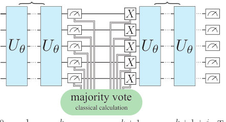
<figcaption class="paper-figure-caption"><b>Fig 1.</b> FIG. 1. Noisy reset protocol and its hardware implementa- tion. (a) For poissonian resetting, at each discrete time step, the system either evolves unitarily with probability 1 −r (the unitary is sketched in the blue panel), or undergoes a reset. In the conditional protocol, the reset state is determined by a majority vote on the mid-circuit measurement (oscilloscope drawings) outcomes. We account in the theory for readout er- rors, which effectively result into a depolarization of the reset state (red panel). Averaging over many stochastic realiza- tions of resetting yields a NESS at long times. (b) Quantum circuit implementation of a single reset realization. Unitary gates Uθ are applied...</figcaption>
</figure>
<figure class="paper-figure-card">
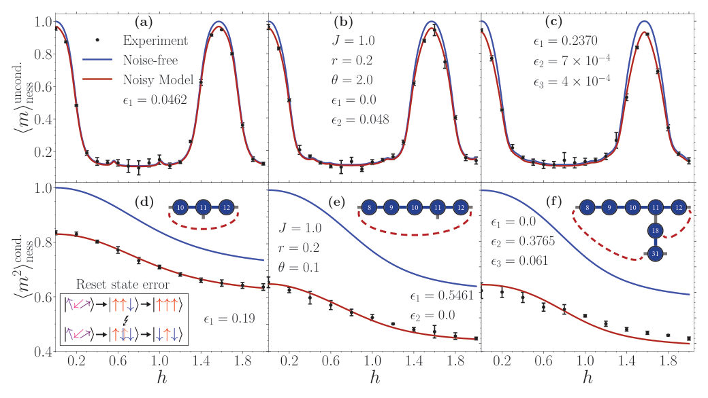
<figcaption class="paper-figure-caption"><b>Fig 2.</b> FIG. 2. Comparison between experimental results and theoretical predictions of unconditional and conditional reset protocols. (a)-(c) Unconditional reset protocol for 3, 5, and 7 qubits, respectively, evaluated up to a maximum time T = 105. (d)-(f) Conditional reset protocol for 3, 5, and 7 qubits, evaluated up to T = 400. In all panels, experimental hardware results (dots) are compared with noiseless theoretical simulations (blue solid lines) and theoretical predictions from the noisy reset model (red solid lines), sketched in panel (d). Error bars denote 95% confidence intervals derived from 5 independent experimental runs. The optimal fitted noise probabilities ϵi are reported in the...</figcaption>
</figure>
</div>

<p><strong>Summary.</strong> This paper develops and experimentally validates a theoretical framework for achieving Non-Equilibrium Steady States (NESS) in quantum many-body systems using stochastic mid-circuit measurements and resets. By applying this to the Floquet transverse-field Ising model on superconducting qubits, the authors show that engineered collective stationary states can be reliably prepared on noisy hardware. This work is significant because it provides a practical methodology for utilizing measurement feedback to control quantum dynamics away from thermal equilibrium.</p>
<p><strong>Why it may be interesting.</strong> This work bridges fundamental non-equilibrium statistical mechanics concepts with cutting-edge quantum hardware capabilities, providing a concrete pathway for engineering complex steady states beyond thermal equilibrium.</p>
<details>
<summary>Detailed structure</summary>
<p><strong>Main problem.</strong> The core problem is validating theoretical predictions of Non-Equilibrium Steady States (NESS) induced by stochastic mid-circuit measurements and resets on actual quantum hardware.</p>
<p><strong>Main result.</strong> The derived noisy conditional resetting theory quantitatively agrees with experimental data on superconducting qubits, demonstrating that collective stationary states can be engineered despite noise.</p>
<p><strong>Method.</strong> The authors combine theoretical derivations using discrete Laplace transforms for NESS calculation with extensive experimental implementation on a superconducting processor.</p>
<p><strong>Model / system.</strong> The system is the interacting Floquet transverse-field Ising model simulated on a superconducting quantum processor (ibm_marrakesh). The dynamics involve alternating unitary evolution ($U_	heta$) with stochastic measurements and conditional resets.</p>
<p><strong>Key observables.</strong> Longitudinal magnetization density ($\langle m 
angle$) and squared magnetization density ($\langle m^2 
angle$).</p>
<p><strong>Important parameters / regimes.</strong> Transverse field strength ($h$), coupling strengths ($J$), system size ($N=3, 5, 7$ qubits).</p>
<p><strong>Assumptions / limitations.</strong> The theory models resets as a semi-Markov process and accounts for readout errors; the experimental analysis compares various noise models (e.g., depolarizing channel vs. noisy reset state model).</p>
<p><strong>Figures summary.</strong> Figures compare measured magnetization versus theoretical predictions across different qubit numbers, showing crossover behavior related to quantum phase transitions.</p>
<p><strong>Paper structure.</strong> The paper progresses from general theory derivations of NESS in discrete time (using Laplace transforms) to applying this framework to the specific Floquet TFIM model, culminating in hardware implementation and noise characterization.</p>
</details>
<details>
<summary>Abstract</summary>
<p>Stochastic resetting has emerged as a versatile protocol to drive quantum many-body systems to non-equilibrium steady states by interspersing unitary dynamics with measurements and resets at random times. In spite of this, a quantum hardware validation of such non-equilibrium steady states is still missing. Here, we achieve this goal by first formulating a noisy discrete-time theory where unitary gates alternate with noisy mid-circuit projective measurements and conditional resets. This noisy conditional resetting theory is then demonstrated on a superconducting quantum processor for up to $N=7$ qubits. We consider, as a paradigmatic case, the unitary dynamics of the interacting Floquet transverse-field Ising model. The stationary state of the noisy conditional resetting agrees quantitatively with the experiments, and it shows crossover behavior related to the equilibrium quantum phase transition of the model. Our results might thus pave the way for the preparation of collective stationary states on noisy quantum devices and for further developments of quantum algorithms involving mid-circuit measurements.</p>
</details>
<p><sub><a href="#top">↑ back to top</a></sub></p>

<p><a id="paper-2606.18552"></a></p>
<h3 id="towards-entanglement-enhanced-atom-interferometry-using-bow-tie-cavities"><a href="http://arxiv.org/abs/2606.18552v1">Towards Entanglement-Enhanced Atom Interferometry Using Bow-Tie Cavities</a></h3>
<p><strong>Authors:</strong> Christian Mancini, Marco Malitesta, Tommaso Mariani, Annalisa Pappalardo, Giuseppe Vinelli, Paolo Vezio, Gabriele Rosi, Enrico Meli, Leonardo Salvi, Guglielmo Maria Tino<br>
<strong>Type:</strong> both · <strong>Category:</strong> other · <strong>PDF:</strong> <a href="https://arxiv.org/pdf/2606.18552v1">https://arxiv.org/pdf/2606.18552v1</a><br>
<strong>Analysis basis:</strong> full PDF text, analyzed in chunks
<strong>Topic relevance:</strong> 🔥 <code>correlated cavity matter</code> <strong>4/5</strong> · 🔥 <code>quantum optics experiment</code> <strong>4/5</strong> · <code>Tavis-Cummings &amp; cavity-many-emitter</code> <strong>3/5</strong> · <code>analog quantum simulation</code> <strong>3/5</strong> · <code>quantum measurements</code> <strong>3/5</strong> · <code>correlated / nonlocal dissipation</code> <strong>2/5</strong> · <code>entanglement &amp; information structure</code> <strong>2/5</strong> · <code>measurement-induced transitions</code> <strong>2/5</strong> · <code>Keldysh / 2PI / non-Gaussian methods</code> <strong>1/5</strong> · <code>QC/QI experiment</code> <strong>1/5</strong> · <code>driven-dissipative phase transition</code> <strong>1/5</strong> · <code>interference shaping light</code> <strong>1/5</strong> · <code>methods for driven-dissipative</code> <strong>1/5</strong></p>
<div class="figure-strip-hint">↔ Scroll figures horizontally</div>
<div class="paper-figures-scroll">
<figure class="paper-figure-card">
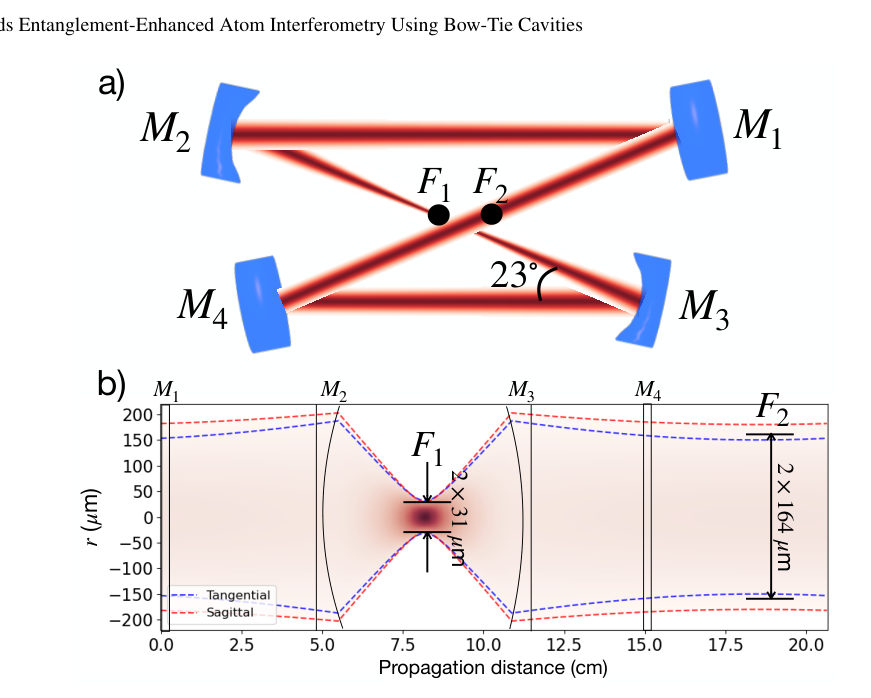
<figcaption class="paper-figure-caption"><b>Fig 1.</b> Figure 1: a) Scheme of the optical cavity with the indication of the four mirrors M1-M4 and the location of the primary (F1) and secondary focus (F2). b) Cavity mode waist as a function of the propagation distance in the unfolded M1-M2-M3-M4-M1 path. The waist values shown, 31 and 164 µm, corresponding to F1 and F2, refer to the geometric mean of the tangential and sagittal waists.</figcaption>
</figure>
<figure class="paper-figure-card">
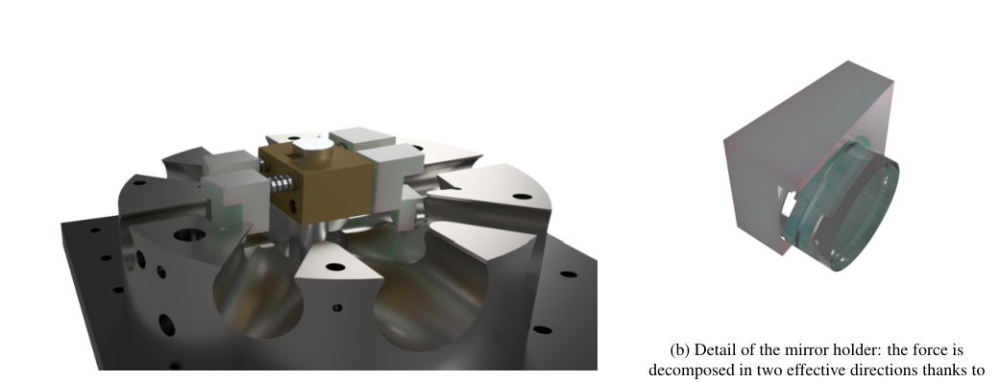
<figcaption class="paper-figure-caption"><b>Fig 2.</b> Figure 2: 3D rendering of the assembly setup. The central holder maintains constant pressure on the mirrors in appropriate directions, ensuring proper contact with the spacer.</figcaption>
</figure>
<figure class="paper-figure-card">
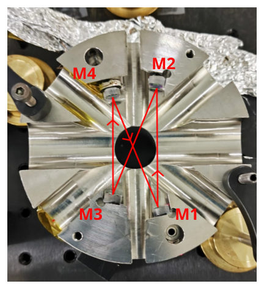
<figcaption class="paper-figure-caption"><b>Fig 3.</b> Figure 3: Photograph of the titanium cavity after the mirrors were glued to the spacer. The 689 nm laser path is highlighted in red, and the four cavity mirrors are labeled.</figcaption>
</figure>
<figure class="paper-figure-card">
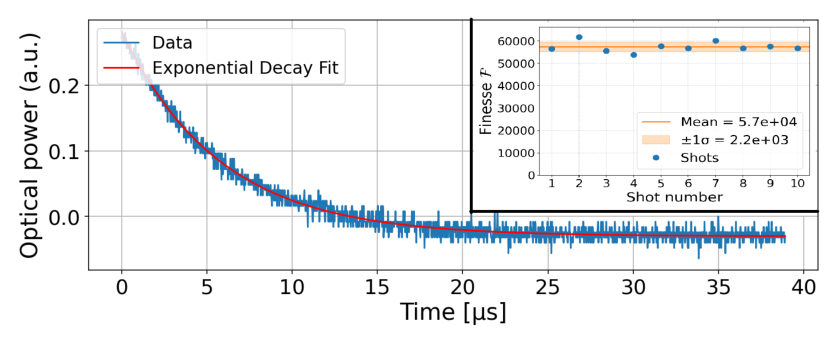
<figcaption class="paper-figure-caption"><b>Fig 4.</b> Figure 4: Exponential decay of the reflected light used to determine the cavity finesse. Inset: results of ten independent measurements, yielding F = (5.7±0.2)×104.</figcaption>
</figure>
<figure class="paper-figure-card">
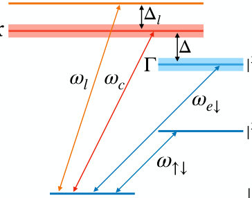
<figcaption class="paper-figure-caption"><b>Fig 5.</b> Figure 5: Schematic representation of the relevant frequencies involved in the squeezing dynamics.</figcaption>
</figure>
</div>

<p><strong>Summary.</strong> This paper presents the design, realization, and theoretical characterization of a monolithic bow-tie cavity optimized for quantum-enhanced atom interferometry using strontium atoms. By leveraging the cavity's unique traveling-wave geometry, the authors demonstrate that entanglement can be generated to suppress quantum projection noise significantly. The results predict state-of-the-art squeezing levels, positioning this platform for next-generation precision measurements.</p>
<p><strong>Why it may be interesting.</strong> This work is highly relevant as it merges advanced concepts from cavity Quantum Electrodynamics (Cavity QED) with matter-wave interferometry. The bow-tie geometry solves a critical engineering problem—achieving uniform coupling in free-fall atomic ensembles—while the squeezing analysis pushes towards Heisenberg scaling.</p>
<details>
<summary>Detailed structure</summary>
<p><strong>Main problem.</strong> The primary goal is to overcome the quantum projection noise limit inherent in atom interferometry to achieve enhanced precision measurements of fundamental physical constants.</p>
<p><strong>Main result.</strong> The realized monolithic bow-tie cavity is predicted to enable metrological gains approaching 24 dB (via feedback) and 28 dB (via QND measurements) for ensembles up to $10^5$ atoms.</p>
<p><strong>Method.</strong> The work combines experimental realization of a specialized optical resonator with theoretical modeling of quantum squeezing dynamics achievable through cavity-mediated atom-light interactions.</p>
<p><strong>Model / system.</strong> The system utilizes strontium atoms coupled to light within a monolithic bow-tie ring cavity. This geometry is chosen because its traveling-wave nature ensures homogeneous coupling across the entire atomic ensemble, unlike conventional standing-wave cavities.</p>
<p><strong>Key observables.</strong> Metrological gain ($\xi^2$), spin squeezing parameter, and measured cavity finesse ($F=5.7	imes 10^4$).</p>
<p><strong>Important parameters / regimes.</strong> Atomic number ($N \le 10^5$), cavity linewidth ($\kappa$), atomic transition wavelength (689 nm), and coupling strength ($N\eta$).</p>
<p><strong>Assumptions / limitations.</strong> The analysis relies on the dispersive regime ($\Delta \gg \Gamma, \kappa$) for squeezing calculations, though limitations arise when $\kappa$ approaches $\Gamma$.</p>
<p><strong>Figures summary.</strong> Figures predict minimum Wineland squeezing parameter ($\xi^2$) scaling with atomic number ($N$) and cavity finesse ($F$), comparing results from cavity feedback versus QND measurements.</p>
<p><strong>Paper structure.</strong> The paper progresses from identifying the noise limit in atom interferometry, detailing the specialized bow-tie cavity design for homogeneous coupling, characterizing its physical parameters (finesse, stability), and finally modeling/predicting the achievable quantum squeezing levels using both cavity feedback and QND measurement formalisms.</p>
</details>
<details>
<summary>Abstract</summary>
<p>Atom interferometers are among the most sensitive instruments for precision measurements and tests of fundamental physics. Their performance, however, is ultimately limited by quantum projection noise when uncorrelated atomic ensembles are employed. Cavity-assisted generation of entangled states has proven to be a promising route toward quantum-enhanced interferometry beyond the standard quantum limit. In this work, we present the realization and characterization of a monolithic bow-tie cavity developed to achieve a strong collective atom-light coupling with strontium atoms. Unlike conventional standing-wave Fabry-Pérot resonators, the traveling-wave geometry of the bow-tie cavity provides homogeneous atom-light coupling over the entire atomic ensemble, making it particularly suitable for entanglement-enhanced atom interferometry with freely falling atoms. The monolithic cavity architecture presents several scientifically relevant features such as high mechanical stability, high finesse, robustness against mirror misalignment, optical and atomic access and the option of generating squeezed states through different strategies. The cavity was realized for operation on the strontium $(5s^2) ^1S_0-(5s5p) ^3P_1$ transition at 689 nm and achieves a finesse of $\mathcal{F}=5.7\times 10^4$ while keeping the transmission of a single mirror sufficiently large to allow for efficient atomic information extraction. In this geometry, the cavity supports two foci with waists of 164 $μ$m and 31 $μ$m which gives access to different regimes of atom-cavity coupling. For ensembles containing up to $10^5$ atoms, the cavity is expected to enable metrological gains approaching 24 dB of spin squeezing through cavity-feedback squeezing, and 28 dB through quantum non-demolition measurements, demonstrating its potential as a platform for next-generation quantum-enhanced atom interferometers.</p>
</details>
<p><sub><a href="#top">↑ back to top</a></sub></p>

<p><a id="paper-2606.18916"></a></p>
<h3 id="exceptional-point-anchored-variational-quantum-eigensolver-for-non-hermitian-many-body-phase-diagrams-bridging-skin-effect-topology-and-entanglement-criticality-on-nisq-hardware"><a href="http://arxiv.org/abs/2606.18916v1">Exceptional-Point-Anchored Variational Quantum Eigensolver for Non-Hermitian Many-Body Phase Diagrams: Bridging Skin-Effect Topology and Entanglement Criticality on NISQ Hardware</a></h3>
<p><strong>Authors:</strong> Akoramurthy B, Surendiran B, Xiaochun Cheng<br>
<strong>Type:</strong> theory · <strong>Category:</strong> quantum information and computing · <strong>PDF:</strong> <a href="https://arxiv.org/pdf/2606.18916v1">https://arxiv.org/pdf/2606.18916v1</a><br>
<strong>Analysis basis:</strong> full PDF text, analyzed in chunks
<strong>Topic relevance:</strong> 🔥 <code>driven-dissipative phase transition</code> <strong>4/5</strong> · <code>analog quantum simulation</code> <strong>3/5</strong> · <code>correlated / nonlocal dissipation</code> <strong>3/5</strong> · <code>entanglement &amp; information structure</code> <strong>3/5</strong> · <code>methods for driven-dissipative</code> <strong>3/5</strong> · <code>non-equilibrium universality</code> <strong>3/5</strong> · <code>Keldysh / 2PI / non-Gaussian methods</code> <strong>2/5</strong> · <code>Kondo &amp; dissipative impurity</code> <strong>2/5</strong> · <code>non-equilibrium dynamics</code> <strong>2/5</strong> · <code>exotic spin models in light-matter</code> <strong>1/5</strong> · <code>scars &amp; prethermalization</code> <strong>1/5</strong></p>
<div class="figure-strip-hint">↔ Scroll figures horizontally</div>
<div class="paper-figures-scroll">
<figure class="paper-figure-card">
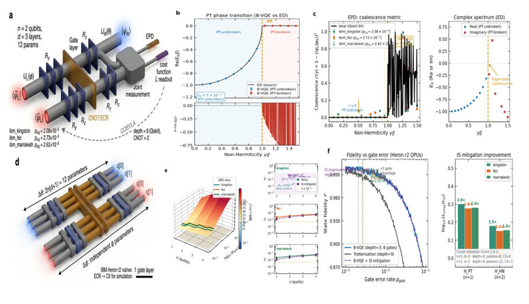
<figcaption class="paper-figure-caption"><b>Fig 1.</b> Figure 1: Experimental demonstration of parity-time (PT) symmetry dynamics and exceptional-point detection using variational quantum eigensolvers on IBM quantum processors. (a) Hardware-efficient variational ansatz employed for the bi-variational quantum eigensolver (B-VQE), showing parameterized single-qubit rotations, entangling layers, and exceptional-point detection (EPD) measurement strategy. (b) PT-phase transition characterized by the real and imaginary components of the ground-state energy as a function of the non-Hermiticity parameter γJ, comparing B-VQE results with exact diagonalization (ED). The exceptional point (EP) is identified at the PT-symmetry breaking transition. (c)...</figcaption>
</figure>
<figure class="paper-figure-card">
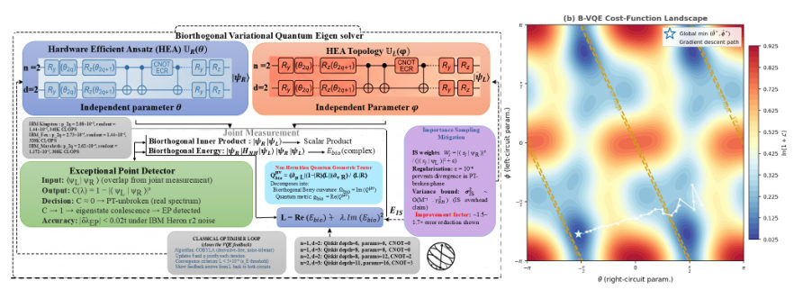
<figcaption class="paper-figure-caption"><b>Fig 2.</b> Figure 2: B-VQE circuit architecture and optimisation convergence (Qiskit-Aer simulation). (a) Dual-circuit architecture: the right-state circuit URθ (blue) and left-state circuit ULϕ (red) are built as Qiskit 2.4.1 QuantumCircuit objects with hardware-efficient ansatz layers (Ry-Rz + CNOT ladder); the biorthogonal cost function LB-VQE and EPD coalescence metric Cλ are evaluated jointly. Noise parameters are from IBM Heron r2 calibration data (ibm kingston, ibm fez, ibm marrakesh). (b) COBYLA convergence trace for γJ = 0.75 (n = 1, d = 3): the cost LB-VQE (blue) converges below the target εE = 5 × 10−3 (red dashed) within ≈120 iterations; the shaded band shows ±15% shot-noise fluctuations.</figcaption>
</figure>
<figure class="paper-figure-card">
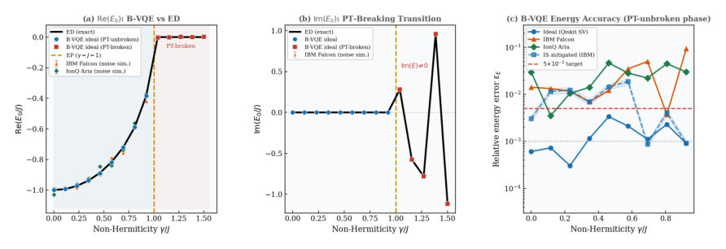
<figcaption class="paper-figure-caption"><b>Fig 3.</b> Figure 3: B-VQE energy accuracy across the PT transition (Qiskit-Aer noise-model simulation). (a) ReE0 vs γJ: ED reference (black), B-VQE ideal statevector (circles/squares, blue/red for PT-unbroken/broken phases), ibm kingston noisy simulation (squares, teal), ibm fez noisy simulation (diamonds, orange), ibm marrakesh noisy simulation (triangles, green). The gold dashed line marks the analytically exact EP at γ = J = 1. (b) ImE0 vs γJ: B-VQE correctly captures the onset of complex eigenvalues in the PT-broken phase (γ &gt; J). (c) Relative energy error εE in the PT-unbroken phase: B-VQE ideal achieves εE &lt; 5 × 10−3 throughout; IS mitigation (dashed blue) reduces IBM noise errors by 30-50%;...</figcaption>
</figure>
<figure class="paper-figure-card">
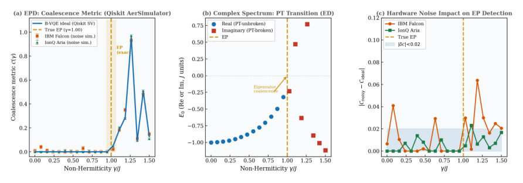
<figcaption class="paper-figure-caption"><b>Fig 4.</b> Figure 4: EP detection via coalescence metric under hardware noise. (a) Coalescence metric Cγ = 1 −|⟨ψL|ψR⟩|2</figcaption>
</figure>
<figure class="paper-figure-card">
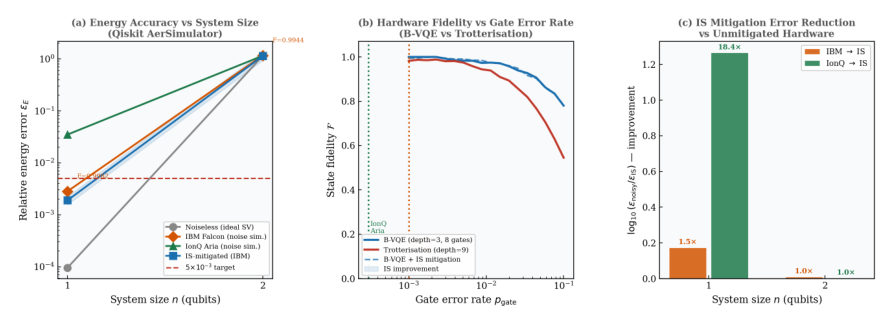
<figcaption class="paper-figure-caption"><b>Fig 5.</b> Figure 5: Noise mitigation benchmarking (Qiskit-Aer). (a) Relative energy error εE vs system size n for noiseless (grey circles), ibm kingston (teal circles), ibm fez (orange diamonds), ibm marrakesh (green triangles), and IS-mitigated ibm kingston (blue squares). Annotated F values give the circuit fidelity F = 1 −p1qn1q1 −p2qncx from the Qiskit noise model. Shaded band: ±15% IS shot-noise uncertainty at M = 16384 shots. (b) State fidelity F vs gate error rate pgate: B-VQE (depth 3, blue) vs Trotterisation (depth 9, red); IS-mitigated B-VQE (dashed blue). Vertical dotted lines mark operating points of ibm kingston (p2q = 2.08 × 10−3), ibm fez (p2q = 2.73 × 10−3), and ibm marrakesh (p2q =...</figcaption>
</figure>
</div>

<p><strong>Summary.</strong> The paper introduces the Biorthogonal Variational Quantum Eigensolver (B-VQE) to simulate non-Hermitian many-body physics on NISQ hardware. It overcomes limitations of previous methods by using dual circuits and importance sampling, allowing for accurate mapping of phase diagrams that exhibit topological features like skin effects and exceptional points. This establishes B-VQE as a scalable tool for studying open quantum systems.</p>
<p><strong>Why it may be interesting.</strong> This work directly addresses the frontier of applying variational quantum algorithms to open quantum systems, providing concrete, resource-aware protocols for mapping complex phase diagrams inaccessible via standard VQE techniques.</p>
<details>
<summary>Detailed structure</summary>
<p><strong>Main problem.</strong> Developing a scalable quantum algorithm to simulate non-Hermitian many-body systems on NISQ hardware, which is challenging due to the lack of standard eigenvalue formulations.</p>
<p><strong>Main result.</strong> The Biorthogonal VQE (B-VQE) successfully maps out complex phase diagrams, detects exceptional points (EPs), and characterizes topological transitions with polynomial overhead scaling.</p>
<p><strong>Method.</strong> It employs a dual-circuit ansatz to approximate left and right eigenstates and minimizes a specialized biorthogonal cost function. Importance-sampling mitigation is used to remove the need for costly post-selection.</p>
<p><strong>Model / system.</strong> The study applies to general non-Hermitian Hamiltonians, tested on specific models like the non-Hermitian Hubbard chain, NH-XXZ spin chain, and 2D t-J model. These systems exhibit phenomena such as PT-symmetry breaking and the Non-Hermitian Skin Effect.</p>
<p><strong>Key observables.</strong> Biorthogonal Energy ($E_{bio}$), Coalescence Metric ($C_\lambda$), Biorthogonal Entanglement Entropy ($S_{bio}$), Loschmidt echo ($\mathcal{L}_t^2$), and Topological Chern Number ($C_{	ext{state}}$).</p>
<p><strong>Important parameters / regimes.</strong> System size (N=10 sites), non-Hermiticity parameter ($\gamma$ or $\lambda$), and noise levels simulated on NISQ hardware.</p>
<p><strong>Assumptions / limitations.</strong> The primary assumption is that the B-VQE ansatz can efficiently approximate the required biorthogonal eigenstates, and that importance sampling mitigation maintains polynomial scaling.</p>
<p><strong>Figures summary.</strong> Figures illustrate phase diagrams showing transitions between ergodic, MBL, and skin-localized phases; they also show $S_{bio}$ scaling laws (volume vs. area law) and the coalescence metric identifying EPs.</p>
<p><strong>Paper structure.</strong> The paper introduces B-VQE for non-Hermitian systems, details the mathematical framework using biorthogonality, presents diagnostic tools like the EPD and NH-QGT, validates the approach on multiple physical models (Hubbard, XXZ, t-J), and concludes by benchmarking its scalability against classical/other quantum methods.</p>
</details>
<details>
<summary>Abstract</summary>
<p>We introduce the Biorthogonal Variational Quantum Eigensolver (B-VQE), a quantum algorithm for simulating non-Hermitian many-body systems on noisy intermediate-scale quantum (NISQ) hardware. Non-Hermitian quantum matter exhibits exceptional points, parity-time symmetry breaking, and non-Hermitian skin effects, yet existing quantum algorithms often rely on costly post-selection procedures and are not designed to capture biorthogonal eigenstates.   B-VQE employs independent variational circuits to represent the left and right eigenstates of a non-Hermitian Hamiltonian and optimizes a biorthogonal objective function that directly tracks non-Hermitian phase transitions. The framework incorporates an Exceptional-Point Detector (EPD) that identifies exceptional points through a hardware-native coalescence metric and a Non-Hermitian Quantum Geometric Tensor (NH-QGT) readout that distinguishes state-topological and band-topological signatures in interacting many-body systems. To overcome the exponential overhead associated with conventional non-Hermitian simulation, we develop an importance-sampling mitigation strategy that removes the need for ancilla-based post-selection while retaining polynomial computational scaling.   We validate the approach on three representative models: a non-Hermitian Hubbard chain, a non-Hermitian XXZ spin chain, and a two-dimensional non-Hermitian (t)-(J) model. B-VQE achieves relative energy errors below (5\times10^{-3}) and locates exceptional points with high accuracy on noise-free simulations while resolving phase boundaries associated with localization, quantum scars, and skin-effect physics. These results establish B-VQE as a scalable NISQ methodology for constructing non-Hermitian many-body phase diagrams and exploring topological and critical phenomena in open quantum systems.</p>
</details>
<p><sub><a href="#top">↑ back to top</a></sub></p>

<p><a id="paper-2606.18360"></a></p>
<h3 id="equilibration-of-generalized-subsystems-a-quantum-channel-approach"><a href="http://arxiv.org/abs/2606.18360v1">Equilibration of generalized subsystems: a quantum-channel approach</a></h3>
<p><strong>Authors:</strong> Pedro S. Correia, Adalberto D. Varizi, Gabriel Dias Carvalho<br>
<strong>Type:</strong> theory · <strong>Category:</strong> statistical mechanics · <strong>PDF:</strong> <a href="https://arxiv.org/pdf/2606.18360v1">https://arxiv.org/pdf/2606.18360v1</a><br>
<strong>Analysis basis:</strong> full PDF text, analyzed in chunks
<strong>Topic relevance:</strong> 🔥 <code>entanglement &amp; information structure</code> <strong>4/5</strong> · 🔥 <code>non-equilibrium dynamics</code> <strong>4/5</strong> · <code>methods for driven-dissipative</code> <strong>3/5</strong> · <code>non-equilibrium universality</code> <strong>3/5</strong> · <code>quantum measurements</code> <strong>3/5</strong> · <code>correlated / nonlocal dissipation</code> <strong>2/5</strong> · <code>driven-dissipative phase transition</code> <strong>2/5</strong> · <code>measurement-induced transitions</code> <strong>2/5</strong> · <code>analog quantum simulation</code> <strong>1/5</strong> · <code>exotic spin models in light-matter</code> <strong>1/5</strong> · <code>scars &amp; prethermalization</code> <strong>1/5</strong></p>
<div class="figure-strip-hint">↔ Scroll figures horizontally</div>
<div class="paper-figures-scroll">
<figure class="paper-figure-card">
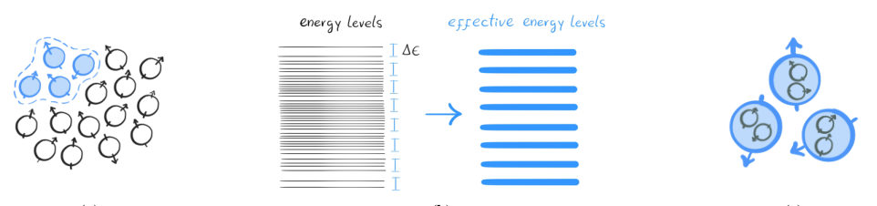
<figcaption class="paper-figure-caption"><b>Fig 1.</b> FIG. 1. Examples of limited accessible information. (a) In the standard subsystem picture, only a subset of particles is accessible, while the rest forms an inaccessible environment. (b) Finite-resolution energy measurements group microscopic energy levels into effective energy win- dows, so that only a coarse-grained energy description is accessible. (c) In a blurred and saturated detector, distinct microscopic configurations can become indistinguishable at the accessible level; for instance, two microscopic qubits may be described by a single effective two-level system.</figcaption>
</figure>
<figure class="paper-figure-card">
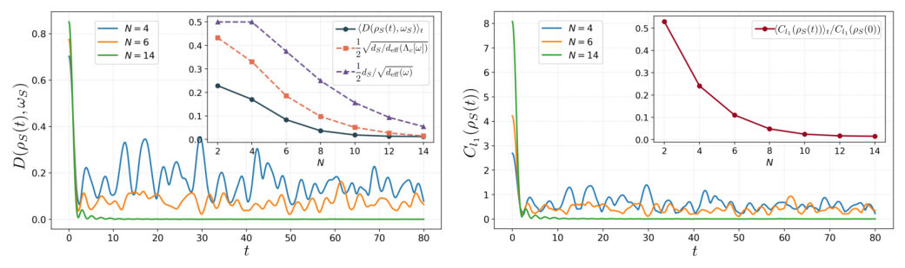
<figcaption class="paper-figure-caption"><b>Fig 2.</b> FIG. 2. Numerical illustration of the finite-resolution energy channel for a finite Ising spin chain. In both panels, the initial state is a balanced coherent superposition of all energy eigenstates, and the spectrum is partitioned into K = N resolved energy windows. Left: temporal behavior of the trace distance D(ϱS(t), ωS), together with its time average and the two equilibration bounds shown in the inset. Right: temporal behavior of the accessible coherence Cl1(ϱS(t)) between distinct effective energy levels, included as a diagnostic of the off-diagonal sector already controlled by trace-distance equilibration; the inset shows the normalized average coherence ⟨Cl1(ϱS(t))⟩t/Cl1(ϱS(0)).</figcaption>
</figure>
</div>

<p><strong>Summary.</strong> This paper develops a unified theoretical framework to study quantum equilibration when information access is limited, modeling the accessible state via a quantum channel acting on the full system. The key finding is that equilibration bounds are determined by comparing the subsystem size to the effective dimension of discarded microscopic details. This has broad implications for understanding thermalization in realistic, measurement-constrained quantum systems.</p>
<p><strong>Why it may be interesting.</strong> This work provides a powerful, general mathematical tool for analyzing thermalization and relaxation in complex quantum systems where the environment or measurement process is not simply modeled by a partial trace. It unifies several distinct physical concepts under one rigorous framework.</p>
<details>
<summary>Detailed structure</summary>
<p><strong>Main problem.</strong> The core problem is understanding quantum equilibration—how an effective, time-independent description emerges for accessible degrees of freedom even when the underlying microscopic dynamics are unitary and reversible.</p>
<p><strong>Main result.</strong> The authors provide a unified state-level framework showing that equilibration bounds depend on the ratio between the subsystem dimension and the effective dimension of discarded microscopic information. They also show that accessible coherences are strongly suppressed during this process.</p>
<p><strong>Method.</strong> The work introduces 'generalized subsystems,' modeling the accessible state as the output of a quantum channel acting on the full system state, allowing for a unified treatment encompassing partial traces and measurement restrictions (POVMs).</p>
<p><strong>Model / system.</strong> The analysis is general but uses the Ising spin chain model as a concrete example to test equilibration bounds. The dynamics are governed by unitary evolution under a Hamiltonian, and information access is restricted via quantum channels ($\Lambda$).</p>
<p><strong>Key observables.</strong> Time-averaged trace distance $D(
ho_S(t), \omega_S)$ (measuring deviation from equilibrium) and accessible coherence measures $C_{l1}(\varrho_S)$.</p>
<p><strong>Important parameters / regimes.</strong> The ratio of the subsystem dimension ($d_S$) to the effective dimension explored by microscopic dynamics ($    ext{deff}(\Lambda_c[\omega])$).</p>
<p><strong>Assumptions / limitations.</strong> The framework assumes that restricted access can be modeled by a quantum channel (CPTP map), and some derivations rely on non-degenerate energy gaps for simplification.</p>
<p><strong>Figures summary.</strong> Figure 2 illustrates the time evolution of both the trace distance $D(\varrho_S(t), \omega_S)$ and the accessible coherence $C_{l1}(\varrho_S(t))$ for a finite Ising chain, showing decay towards equilibrium/zero.</p>
<p><strong>Paper structure.</strong> The paper develops the generalized quantum channel framework first, deriving sharp bounds based on effective dimensions. It then applies this to specific physical scenarios like POVMs and finite-resolution energy measurements, culminating in numerical simulations on an Ising model to demonstrate coherence suppression.</p>
</details>
<details>
<summary>Abstract</summary>
<p>Quantum systems governed by unitary and reversible microscopic dynamics may nevertheless exhibit equilibration, in the sense that some effective description becomes time-independent. Standard equilibration results usually consider two separate situations: system-environment structures, in which the composite system evolves unitarily while the system of interest equilibrates, and restricted measurements, such as coarse-grained POVMs and observables, in which the measurement statistics equilibrate. Here, we bring these descriptions into a common state-level framework using the concept of generalized subsystems, where the accessible effective state appears as the output of a quantum channel acting on the microscopic state. We derive bounds showing that generalized subsystems equilibrate when their dimension is small compared with the effective dimension of the discarded microscopic information. We further show that this condition is met for typical initial states in large subspaces and that the resulting equilibrium description is largely insensitive to microscopic initial details. The framework recovers the usual equilibration bounds for ordinary subsystems and finite families of POVMs. As an example, we also introduce a finite-resolution energy channel that maps unresolved microscopic energy levels into effective energy levels, thereby making residual effective coherences explicit and showing how spectral multiplicities constrain those coherences while strengthening equilibration. Our results provide a unified state-level formulation of quantum equilibration under general forms of limited accessible information.</p>
</details>
<p><sub><a href="#top">↑ back to top</a></sub></p>

<p><a id="paper-2606.18629"></a></p>
<h3 id="holographic-dual-of-pt-symmetric-bcft"><a href="http://arxiv.org/abs/2606.18629v1">Holographic Dual of PT Symmetric BCFT</a></h3>
<p><strong>Authors:</strong> Ryota Maeda, Nanami Nakamura, Tadashi Takayanagi<br>
<strong>Type:</strong> theory · <strong>Category:</strong> statistical mechanics · <strong>PDF:</strong> <a href="https://arxiv.org/pdf/2606.18629v1">https://arxiv.org/pdf/2606.18629v1</a><br>
<strong>Analysis basis:</strong> full PDF text, analyzed in chunks
<strong>Topic relevance:</strong> 🔥 <code>driven-dissipative phase transition</code> <strong>4/5</strong> · <code>correlated / nonlocal dissipation</code> <strong>3/5</strong> · <code>entanglement &amp; information structure</code> <strong>3/5</strong> · <code>methods for driven-dissipative</code> <strong>3/5</strong> · <code>non-equilibrium dynamics</code> <strong>3/5</strong> · <code>non-equilibrium universality</code> <strong>3/5</strong> · <code>Keldysh / 2PI / non-Gaussian methods</code> <strong>2/5</strong> · <code>Kondo &amp; dissipative impurity</code> <strong>2/5</strong> · <code>analog quantum simulation</code> <strong>1/5</strong> · <code>correlated cavity matter</code> <strong>1/5</strong> · <code>scars &amp; prethermalization</code> <strong>1/5</strong></p>
<div class="figure-strip-hint">↔ Scroll figures horizontally</div>
<div class="paper-figures-scroll">
<figure class="paper-figure-card">
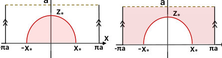
<figcaption class="paper-figure-caption"><b>Fig 1.</b> FIG. 1. Sketches of gravity duals of the BCFT with the asym- metric exactly marginal deformation (colored region), where the red curve describes the EOW brane. The left and right panel corresponds to the case where ϕ is real and imaginary, respectively.</figcaption>
</figure>
<figure class="paper-figure-card">
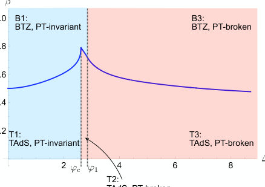
<figcaption class="paper-figure-caption"><b>Fig 2.</b> FIG. 3. A sketch of phase diagram. The PT symmetry is spontaneously broken in the red colored phases, while it is unbroken in the blue colored ones.</figcaption>
</figure>
<figure class="paper-figure-card">
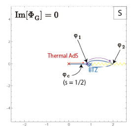
<figcaption class="paper-figure-caption"><b>Fig 3.</b> FIG. 4. The contour plot of Im ΦG = 0. Starting from s = 1, the BTZ branch follows the blue path and is analytically con- tinued to the purple branch, while the Thermal AdS branch start from s = 0, follows the red path and is continued to the same purple branch. Thus ΦT and ΦB have been analytically continued twice at the same value φ1, φ2.</figcaption>
</figure>
<figure class="paper-figure-card">
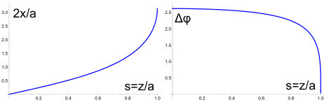
<figcaption class="paper-figure-caption"><b>Fig 4.</b> FIG. 5. Plots of Plots of 2x∗</figcaption>
</figure>
<figure class="paper-figure-card">
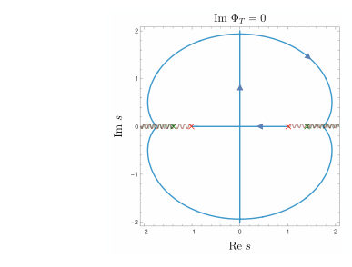
<figcaption class="paper-figure-caption"><b>Fig 5.</b> FIG. 8. The contour plot of Im ΦT = 0. The contour extends along the real axis from −1 to 1, the full imaginary axis, and also the non-trivial curve in each quadrant. To monotonically increase the value of ΦT , we start from s = 1, pass through s = 0 and s = 1.994i, and follow the route in first quadrant. As we saw, ϕT (s = 1) = 0, ΦT (s = 0) = φc, and ΦT (s ≃ 1.937i) = φ1. We also note that the function has fourth-root branch points at s = ±1, and logarithmic ones at s = ± √</figcaption>
</figure>
</div>

<p><strong>Summary.</strong> This paper develops the holographic dual description for a 2D CFT with non-Hermitian $ ext{PT}$-symmetric boundary conditions using AdS/BCFT. Key findings include identifying the spontaneous breaking of $   ext{PT}$ symmetry and calculating entanglement entropy growth in quantum quench scenarios that surpass standard bounds. It provides a comprehensive theoretical framework linking gravity, field theory, and non-Hermitian physics.</p>
<p><strong>Why it may be interesting.</strong> The connection between $ ext{PT}$-symmetry, non-Hermiticity, and holographic duality provides a powerful toolset for studying open quantum systems whose Hamiltonians are not standardly Hermitian, which is highly relevant to modern AMO physics.</p>
<details>
<summary>Detailed structure</summary>
<p><strong>Main problem.</strong> The research aims to find a holographic dual for a two-dimensional Conformal Field Theory (CFT) subjected to non-Hermitian but Parity-Time ($ ext{PT}$) symmetric boundary conditions.</p>
<p><strong>Main result.</strong> The study demonstrates spontaneous $   ext{PT}$ symmetry breaking as the interaction strength increases, and it calculates entanglement entropy growth during quantum quenches that exceeds standard predictions.</p>
<p><strong>Method.</strong> The authors employ the AdS/BCFT duality, calculating on-shell actions in thermal ($ ext{TAdS}$) and black hole ($ ext{BTZ}$) geometries to determine system energy and phase transitions.</p>
<p><strong>Model / system.</strong> The model involves a $  ext{BCFT}$ defined on an interval with non-Hermitian boundary interactions localized via an End-of-the-World ($ ext{EOW}$) brane in the gravity dual. The analysis covers different phases, including thermal and black hole regimes.</p>
<p><strong>Key observables.</strong> Energy ($E_T$), entanglement entropy growth rate ($\Delta S_A(t)$), and the boundary scalar source ($\Delta\phi$).</p>
<p><strong>Important parameters / regimes.</strong> The deformation parameter $\Delta\phi$ controls the transition between $  ext{PT}$-symmetric and $    ext{PT}$-broken phases, with a critical point $\phi_c$.</p>
<p><strong>Assumptions / limitations.</strong> The analysis involves approximations for small deformations ($\Delta\phi \ll 1$) and requires extending calculations across different Riemann surfaces to map out the full parameter space.</p>
<p><strong>Figures summary.</strong> Figures illustrate the energy $E_T$ dependence on $\Delta\phi$, phase diagrams mapping system regimes, and plots showing how boundary parameters ($X, \Phi$) are calculated along specific contours in the complex plane.</p>
<p><strong>Paper structure.</strong> The paper systematically analyzes the holographic dual across different phases (Thermal AdS vs. BTZ BH), determines critical points for symmetry breaking ($   ext{PT}$ breaking), and extends the analysis to quantum quench dynamics by Wick rotating the setup.</p>
</details>
<details>
<summary>Abstract</summary>
<p>We present a holographic dual of a two dimensional conformal field theory with non-hermitian but Parity-Time (PT) symmetric boundary conditions, by applying the AdS/BCFT duality and by introducing an imaginary valued scalar field localized on an end-of-the-world brane. We find that as we increase the strength of the non-hermitian PT symmetric interactions, the system experiences a spontaneous PT symmetry breaking. We also consider its Wick rotated setup as a new quantum quenched state and show that its growth of entanglement entropy can be larger than the standard results obtained from standard Cardy states.</p>
</details>
<p><sub><a href="#top">↑ back to top</a></sub></p>

<p><a id="paper-2606.18348"></a></p>
<h3 id="steady-state-spectral-kissing-and-dissipative-phase-transitions"><a href="http://arxiv.org/abs/2606.18348v1">Steady-state spectral kissing and dissipative phase transitions</a></h3>
<p><strong>Authors:</strong> Devesh Karthik, Jorge Chávez-Carlos, Edson M. Signor, Victor S. Batista, Francisco Pérez-Bernal, Lea F. Santos<br>
<strong>Type:</strong> theory · <strong>Category:</strong> statistical mechanics · <strong>PDF:</strong> <a href="https://arxiv.org/pdf/2606.18348v1">https://arxiv.org/pdf/2606.18348v1</a><br>
<strong>Analysis basis:</strong> full PDF text, analyzed in chunks
<strong>Topic relevance:</strong> 🔥 <code>driven-dissipative phase transition</code> <strong>4/5</strong> · <code>correlated / nonlocal dissipation</code> <strong>3/5</strong> · <code>methods for driven-dissipative</code> <strong>3/5</strong> · <code>non-equilibrium universality</code> <strong>3/5</strong> · <code>Keldysh / 2PI / non-Gaussian methods</code> <strong>2/5</strong> · <code>Tavis-Cummings &amp; cavity-many-emitter</code> <strong>2/5</strong> · <code>non-equilibrium dynamics</code> <strong>2/5</strong> · <code>Kondo &amp; dissipative impurity</code> <strong>1/5</strong> · <code>analog quantum simulation</code> <strong>1/5</strong> · <code>correlated cavity matter</code> <strong>1/5</strong> · <code>entanglement &amp; information structure</code> <strong>1/5</strong> · <code>scars &amp; prethermalization</code> <strong>1/5</strong></p>
<div class="figure-strip-hint">↔ Scroll figures horizontally</div>
<div class="paper-figures-scroll">
<figure class="paper-figure-card">
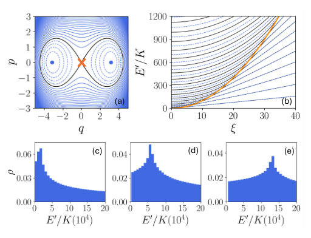
<figcaption class="paper-figure-caption"><b>Fig 1.</b> FIG. 1. Isolated KPO. (a) Classical phase-space structure of the Hamiltonian in Eq. (2) for ξ = 5. The blue dots mark the global minima, the orange cross at (0, 0) indicates the hy- perbolic point, and the black curve crossing at the origin is the separatrix. (b) Excitation energies E′ = E −EGS of the quantum Hamiltonian in Eq. (1) as a function of the squeezing amplitude ξ, showing spectral kissing. The orange line indi- cates the ESQPT critical energy E′ c = Kξ2. (c)–(e) Density of states for (c) ξ = 120, (d) ξ = 240, (e) ξ = 360, indicating the clustering of energy levels characteristic of ESQPTs.</figcaption>
</figure>
<figure class="paper-figure-card">
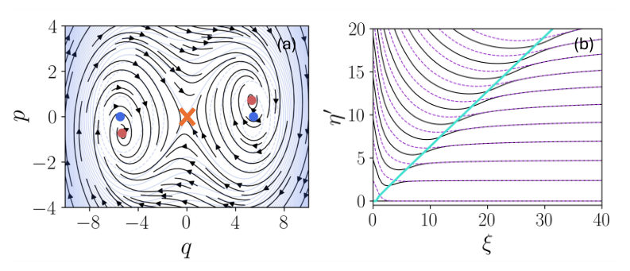
<figcaption class="paper-figure-caption"><b>Fig 2.</b> FIG. 2. Open KPO for the parameters κ/K = 2 and nth = 0.1. (a) Classical phase space dissipative flow for ξ = 15. The cross marks the hyperbolic point at the origin, red circles denote the stable spiral attractors, and blue circles the minima of the closed system. (b) Eigenvalues η′ = η −η0 of the steady-state Hamiltonian Hss vs. ξ, showing steady-state spectral-kissing. The blue line indicates the number nss of paired eigenvalues of Hss, as defined in Eq. (12).</figcaption>
</figure>
<figure class="paper-figure-card">
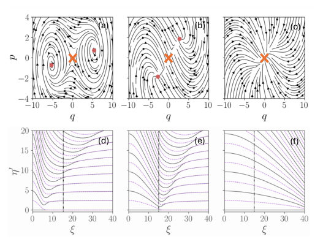
<figcaption class="paper-figure-caption"><b>Fig 3.</b> FIG. 3. Open KPO for nth = 0.1 and increasing dissipa- tion strength; from left to right: κ/K = 16, 56, and 160. (a)-(c) Classical phase space dissipative flow for ξ = 15, cor- responding to κc/K = 60. The cross marks the fixed point at the origin, which is hyperbolic in (a)-(b) and becomes a sta- ble attractor in (c). The red circles denote (a) stable spirals and (b) stable nodes. (d)-(f) Eigenvalues η′ = η −η0 of the steady-state Hamiltonian Hss as a function of ξ. The vertical line indicates the value of ξ = 15 used in the corresponding upper panels (a)-(c).</figcaption>
</figure>
</div>

<p><strong>Summary.</strong> The paper explores how quantum phenomena like 'spectral kissing,' typically seen in isolated systems, manifest in the presence of environmental dissipation. Using an Open Kerr Parametric Oscillator as a model, it shows that spectral pairing persists in the steady-state spectrum when dissipation is weak. The transition where this pairing vanishes marks a distinct dissipative phase transition.</p>
<p><strong>Why it may be interesting.</strong> This work provides a concrete theoretical framework for observing quantum coherence signatures (like spectral kissing) surviving decoherence, which is crucial for understanding realistic quantum devices and open quantum system dynamics.</p>
<details>
<summary>Detailed structure</summary>
<p><strong>Main problem.</strong> The study investigates whether spectral signatures observed in closed quantum systems, specifically 'spectral kissing,' persist as a measurable feature when the system is coupled to an environment (dissipative counterpart).</p>
<p><strong>Main result.</strong> Spectral kissing persists in the weak-dissipation regime of the steady-state density matrix spectrum, mirroring the closed system's behavior. The disappearance of this pairing signals a clear dissipative phase transition.</p>
<p><strong>Method.</strong> The analysis combines examining the eigenvalues of the effective steady-state Hamiltonian ($\hat{H}_{ss}$) with deriving and analyzing the classical limit dynamics governed by a Lindblad master equation.</p>
<p><strong>Model / system.</strong> The representative model is an Open Kerr Parametric Oscillator (KPO). The system evolution is described by a Lindblad master equation, and its classical counterpart exhibits a double-well phase-space structure.</p>
<p><strong>Key observables.</strong> Steady-state eigenvalues of $\hat{H}_{ss}$, the degree of eigenvalue pairing (spectral kissing), and the critical dissipation strength ($\kappa_c$).</p>
<p><strong>Important parameters / regimes.</strong> Dissipation strength ($\kappa$), squeezing amplitude ($\xi$), thermal occupation number ($n_{th}$), and the ratio $\kappa/\kappa_c$.</p>
<p><strong>Assumptions / limitations.</strong> The analysis relies on the weak-dissipation regime ($\kappa$ small) to relate steady-state eigenstates to closed system features, and uses semiclassical approximations.</p>
<p><strong>Figures summary.</strong> Figures illustrate classical phase-space flow (showing attractors), quantum excitation energies vs. squeezing parameter showing spectral kissing, and how these signatures vanish as dissipation strength increases past a critical point.</p>
<p><strong>Paper structure.</strong> The paper first establishes the closed system's ESQPT via spectral kissing. It then extends this analysis to the open system using the Lindblad equation, demonstrating that the quasi-degenerate pairing of steady-state eigenvalues mirrors the closed case in weak dissipation. Finally, it derives analytical expressions from the classical limit to pinpoint the critical lines where this dissipative phase transition occurs.</p>
</details>
<details>
<summary>Abstract</summary>
<p>Spectral kissing, recently realized in a Kerr parametric oscillator (KPO), refers to the merging of pairs of energy levels and arises as a manifestation of an excited-state quantum phase transition (ESQPT). Here, we show that this phenomenon has a dissipative counterpart encoded in the spectrum of the steady-state density matrix. Using a dissipative KPO as a representative example, we demonstrate that, in the weak-dissipation regime, the eigenvalues of the steady-state density matrix organize into quasi-degenerate pairs that mirror the spectral kissing of the corresponding closed system. As the dissipation strength increases, this pairing gradually disappears. By analyzing the classical limit of the system, we derive analytical expressions for the critical lines governing both the onset of steady-state spectral kissing and its disappearance at a dissipative phase transition.</p>
</details>
<p><sub><a href="#top">↑ back to top</a></sub></p>

<p><a id="paper-2606.19206"></a></p>
<h3 id="mapping-the-non-equilibrium-interacting-anderson-impurity-model-to-an-effective-gaussian-theory"><a href="http://arxiv.org/abs/2606.19206v1">Mapping the non-equilibrium interacting Anderson Impurity Model to an effective Gaussian theory</a></h3>
<p><strong>Authors:</strong> Emmanuel Bogacz, Graham Kells, Andrew K. Mitchell<br>
<strong>Type:</strong> theory · <strong>Category:</strong> strongly correlated electrons · <strong>PDF:</strong> <a href="https://arxiv.org/pdf/2606.19206v1">https://arxiv.org/pdf/2606.19206v1</a><br>
<strong>Analysis basis:</strong> full PDF text, analyzed in chunks
<strong>Topic relevance:</strong> 🔥 <code>Kondo &amp; dissipative impurity</code> <strong>4/5</strong> · 🔥 <code>methods for driven-dissipative</code> <strong>4/5</strong> · 🔥 <code>non-equilibrium dynamics</code> <strong>4/5</strong> · <code>Keldysh / 2PI / non-Gaussian methods</code> <strong>3/5</strong> · <code>non-equilibrium universality</code> <strong>3/5</strong> · <code>entanglement &amp; information structure</code> <strong>2/5</strong> · <code>analog quantum simulation</code> <strong>1/5</strong> · <code>correlated / nonlocal dissipation</code> <strong>1/5</strong> · <code>driven-dissipative phase transition</code> <strong>1/5</strong></p>
<div class="figure-strip-hint">↔ Scroll figures horizontally</div>
<div class="paper-figures-scroll">
<figure class="paper-figure-card">
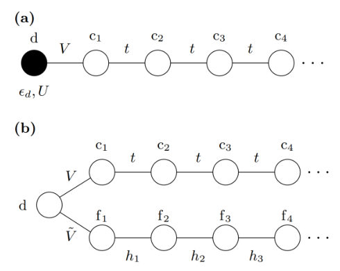
<figcaption class="paper-figure-caption"><b>Fig 1.</b> FIG. 1. Schematic representations of the bare and effective models in chain form. (a) Interacting AIM; and (b) Non- interacting effective model in which U = 0 but the impurity couples to an additional auxiliary chain of fermions fn.</figcaption>
</figure>
<figure class="paper-figure-card">
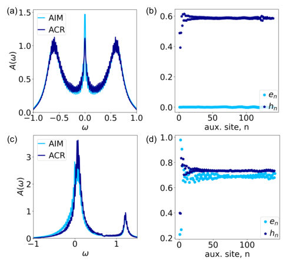
<figcaption class="paper-figure-caption"><b>Fig 2.</b> FIG. 3. Same as Fig. 2 but for N = 101 bath sites, with the AIM calculation now performed using TDVP-MPS methods.</figcaption>
</figure>
<figure class="paper-figure-card">
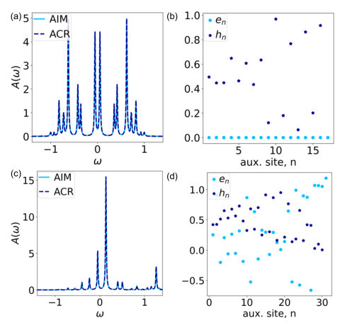
<figcaption class="paper-figure-caption"><b>Fig 3.</b> FIG. 2. Auxiliary chain mapping in equilibrium for the AIM with N = 7 bath sites. Panels (a,c) show the impurity spectral function A(ω) for the interacting AIM computed exactly with ED (light blue lines), and for the effective non-interacting ACR (dark blue lines). Panels (b,d) show the auxiliary chain parameters. Here U = 1, t = 0.5, V = 0.2 and ϵd = −U/2 (half filling) in (a,b) but ϵd = 0 (mixed valence) in (c,d).</figcaption>
</figure>
<figure class="paper-figure-card">

<figcaption class="paper-figure-caption"><b>Fig 4.</b> Fig. 2 shows results for the equilibrium mapping from the interacting AIM to the non-interacting ACR. Here we consider an impurity coupled to N = 7 physical bath sites, and solve the bare model exactly in the strongly-correlated regime using ED. We take represen- tative model parameters U = 1, t = 0.5, V = 0.2. The choice t = 0.5 means a conduction electron bandwidth D = 1 in the thermodynamic limit N →∞, and we use this as our unit of energy. Top panels (a,b) are for the half-filling case ϵd = −U/2 whereas bottom panels (c,d) are for the mixed-valence case ϵd = 0. We keep these same set of parameters throughout the paper to afford a direct comparison of results (but vary N). Left pan- els...</figcaption>
</figure>
<figure class="paper-figure-card">
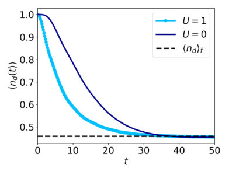
<figcaption class="paper-figure-caption"><b>Fig 5.</b> FIG. 4. Time evolution of impurity occupation following a quench in the AIM, comparing interacting (U = 1, light blue line) and non-interacting (U = 0, dark blue) cases. Plotted for N = 301, t = 0.5, V = 0.2, ϵi d = −U/2. For U = 1 we choose ϵf d = 0; for U = 0 we tune ϵf d to give the same impurity occupation in the long-time limit (dashed line).</figcaption>
</figure>
</div>

<p><strong>Summary.</strong> The paper tackles the formidable challenge of simulating strongly correlated systems like the Anderson Impurity Model when driven out of equilibrium. The authors introduce a novel mapping that rewrites the interacting dynamics as an effective, non-interacting Gaussian theory coupled to auxiliary degrees of freedom. This allows researchers to analyze complex many-body physics by solving a mathematically simpler, albeit larger, single-particle problem.</p>
<p><strong>Why it may be interesting.</strong> This work provides a powerful conceptual and computational tool for analyzing non-equilibrium quantum dynamics. By transforming an intractable interacting problem into a solvable non-interacting one (albeit larger), it offers new insights into information propagation and correlation physics beyond standard equilibrium methods.</p>
<details>
<summary>Detailed structure</summary>
<p><strong>Main problem.</strong> The core challenge is understanding the complex, time-evolving dynamics of strongly interacting quantum impurity models when driven out of equilibrium (quenched).</p>
<p><strong>Main result.</strong> The authors demonstrate that this non-equilibrium AIM evolution can be exactly mapped onto a completely non-interacting effective Gaussian theory coupled to an auxiliary chain.</p>
<p><strong>Method.</strong> They employ advanced numerical techniques like DMRG/MPS and variational optimization, treating the parameters of the effective non-interacting model as variational variables fitted against time-dependent expectation values from the interacting system.</p>
<p><strong>Model / system.</strong> The study focuses on the Anderson Impurity Model (AIM), which describes local moments in quantum dots or correlated materials. The method maps its complex interaction dynamics onto a solvable, non-interacting Hamiltonian augmented by auxiliary degrees of freedom.</p>
<p><strong>Key observables.</strong> Impurity occupation $\langle n_d(t) 
angle$, real-space site occupations $\langle n_j(t) 
angle$, and the spectral function $A(\omega)$.</p>
<p><strong>Important parameters / regimes.</strong> Interaction strength ($U$), impurity level ($\epsilon_d$), quench parameters (initial vs. final potentials), and the size of the auxiliary chain ($M$).</p>
<p><strong>Assumptions / limitations.</strong> The primary assumption is that an effective non-interacting description, parameterized by optimizing against time evolution data, can capture the full dynamics of the interacting system.</p>
<p><strong>Figures summary.</strong> Figures compare spectral functions (A(omega)) and quench dynamics ($\langle n_d(t) 
angle$) between the true AIM and the optimized auxiliary chain representation, showing quantitative agreement for both equilibrium and non-equilibrium regimes.</p>
<p><strong>Paper structure.</strong> The paper progresses from establishing the complexity of out-of-equilibrium AIM dynamics to developing the mapping strategy via Green's function formalism (spectral domain), then applying this mapping iteratively by optimizing parameters against time-dependent expectation values in real space, culminating in validation across multiple observables.</p>
</details>
<details>
<summary>Abstract</summary>
<p>Quantum impurity models with strong electron correlations, such as the paradigmatic Anderson Impurity Model (AIM), are central to our understanding of a range of physical phenomena including local moment formation, Coulomb blockade and Kondo screening. They describe magnetic atoms and molecules on surfaces, quantum dot circuits, and correlated materials through dynamical mean field theory. The physics of such systems in strongly non-equilibrium conditions is particularly complex and challenging to capture, whereas Gaussian models of free fermions can be easily solved. Here we show that the time-evolving dynamics of the AIM after a quench can be described by a completely non-interacting version of the model, at the expense of coupling to additional static auxiliary degrees of freedom. Starting from the full solution of the quenched AIM using ED and DMRG, we study the properties of this mapping using numerical optimization, and uncover intriguing structure in the auxiliary system. The method allows us to understand interacting non-equilibrium dynamics through the simpler lens of an effective non-interacting system of larger dimension.</p>
</details>
<p><sub><a href="#top">↑ back to top</a></sub></p>

<p><a id="paper-2606.18991"></a></p>
<h3 id="measurement-enabled-online-quantum-processing-with-amplitude-encoding"><a href="http://arxiv.org/abs/2606.18991v1">Measurement-enabled online quantum processing with amplitude encoding</a></h3>
<p><strong>Authors:</strong> Giacomo Franceschetto, Pere Mujal, Rodrigo Martínez-Peña<br>
<strong>Type:</strong> both · <strong>Category:</strong> quantum information and computing · <strong>PDF:</strong> <a href="https://arxiv.org/pdf/2606.18991v1">https://arxiv.org/pdf/2606.18991v1</a><br>
<strong>Analysis basis:</strong> full PDF text, analyzed in chunks
<strong>Topic relevance:</strong> 🔥 <code>QC/QI experiment</code> <strong>4/5</strong> · 🔥 <code>quantum measurements</code> <strong>4/5</strong> · <code>measurement-induced transitions</code> <strong>3/5</strong> · <code>methods for driven-dissipative</code> <strong>3/5</strong> · <code>non-equilibrium dynamics</code> <strong>2/5</strong> · <code>Keldysh / 2PI / non-Gaussian methods</code> <strong>1/5</strong> · <code>analog quantum simulation</code> <strong>1/5</strong> · <code>correlated / nonlocal dissipation</code> <strong>1/5</strong> · <code>driven-dissipative phase transition</code> <strong>1/5</strong> · <code>entanglement &amp; information structure</code> <strong>1/5</strong> · <code>exotic spin models in light-matter</code> <strong>1/5</strong></p>
<div class="figure-strip-hint">↔ Scroll figures horizontally</div>
<div class="paper-figures-scroll">
<figure class="paper-figure-card">
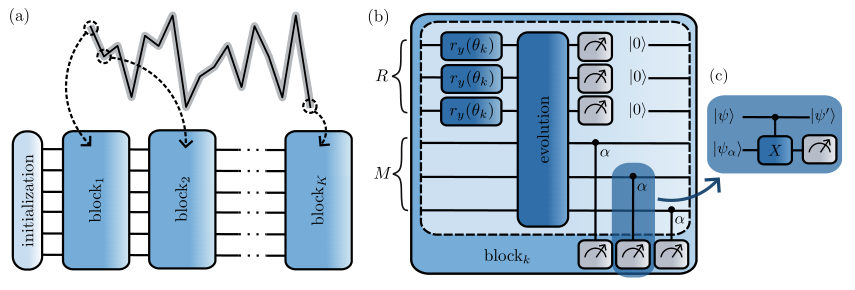
<figcaption class="paper-figure-caption"><b>Fig 1.</b> FIG. 1: Quantum reservoir computing scheme for the online protocol using amplitude encoding. (a) The complete circuit for the algorithm over K time steps, with one block per step. (b) Description of a circuit block at time step k. (c) Description of the indirect measurement circuit for a memory qubit and its ancilla.</figcaption>
</figure>
<figure class="paper-figure-card">
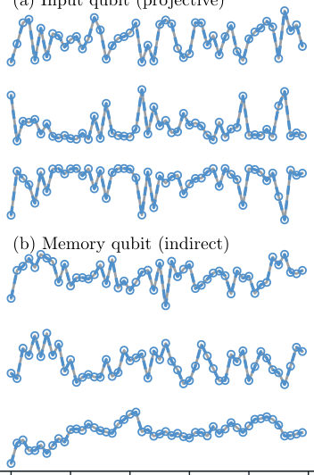
<figcaption class="paper-figure-caption"><b>Fig 2.</b> FIG. 2: Comparison of expectation values obtained from the spin model and the circuit model for (a) the input qubit under projective measurement and for (b) a memory qubit under indirect measurement.</figcaption>
</figure>
<figure class="paper-figure-card">
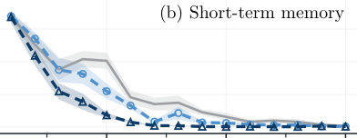
<figcaption class="paper-figure-caption"><b>Fig 3.</b> FIG. 3: Capacity of the hardware-tailored reservoir architecture for (a) predicting the Santa Fe time series and (b) solving the STM task.</figcaption>
</figure>
<figure class="paper-figure-card">
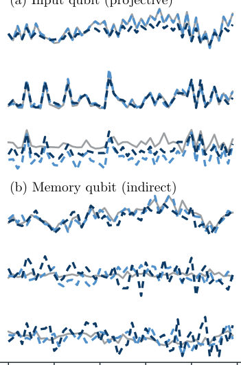
<figcaption class="paper-figure-caption"><b>Fig 4.</b> FIG. 5: Comparison of expectation values obtained from the spin model, the circuit simulation and the hardware-tailored realization for (a) the input qubit under projective measurement and for (b) a memory qubit under indirect measurement.</figcaption>
</figure>
<figure class="paper-figure-card">
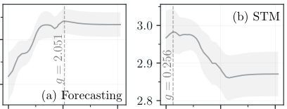
<figcaption class="paper-figure-caption"><b>Fig 5.</b> FIG. 4: Optimization of the measurement strength with the spin model for the hardware-tailored experiment.</figcaption>
</figure>
</div>

<p><strong>Summary.</strong> This paper presents a novel protocol for performing amplitude-encoded quantum reservoir computing online using mid-circuit measurements. By introducing an indirect measurement scheme, the authors overcome limitations of previous methods that required input buffering or complex resets. The work provides both theoretical foundations and hardware demonstrations showing scalable monitoring of complex quantum reservoir dynamics.</p>
<p><strong>Why it may be interesting.</strong> This work directly addresses the challenge of implementing complex, continuous quantum information processing protocols (like QRC) on noisy, discrete hardware by developing measurement techniques that preserve online operation and system observability.</p>
<details>
<summary>Detailed structure</summary>
<p><strong>Main problem.</strong> The primary goal is to develop an online quantum reservoir computing (QRC) protocol that realizes amplitude encoding on physical quantum hardware while maintaining linear runtime scaling.</p>
<p><strong>Main result.</strong> The proposed method successfully enables the monitoring of full system dynamics by combining mid-circuit measurements with a novel indirect measurement scheme, providing a practical path for scalable QRC implementation.</p>
<p><strong>Method.</strong> The core technique involves using mid-circuit measurement and reset operations to simulate partial trace dynamics required for amplitude encoding, supplemented by an ancillary qubit based indirect measurement protocol.</p>
<p><strong>Model / system.</strong> The system is modeled as a quantum reservoir computing setup, comparing theoretical spin models (Ising Hamiltonian) with circuit implementations on hardware platforms like superconducting qubits or trapped ions concepts. The memory evolution follows recurrent dynamics $
ho_u^k = L_k[
ho_u^{k-1}]$.</p>
<p><strong>Key observables.</strong> Expected values of Pauli operators ($\langle\hat{\sigma}_x
angle, \langle\hat{\sigma}_y
angle, \langle\hat{\sigma}_z
angle$) for both input (direct) and memory (indirect) qubits; the capacity $C(\eta)$ of the reservoir.</p>
<p><strong>Important parameters / regimes.</strong> Measurement strength parameter $\alpha$ (or related coupling constants like $g$), which controls the measurement backaction, ranging from projective ($\alpha=1$) to weak limits.</p>
<p><strong>Assumptions / limitations.</strong> Previous methods requiring input buffering or 'rewinding' are avoided; hardware limitations force approximations like nearest-neighbor Hamiltonians and finite time windows for long sequences.</p>
<p><strong>Figures summary.</strong> Figures illustrate the QRC circuit structure, compare dynamics across spin model/circuit simulation/hardware realizations, and plot capacity $C(\eta)$ versus measurement strength or observable combinations for forecasting tasks.</p>
<p><strong>Paper structure.</strong> The paper introduces the theoretical protocol combining amplitude encoding via mid-circuit measurements with an indirect measurement scheme. It then details the mathematical formulation using both spin models and circuit maps before presenting proof-of-principle implementations and benchmarking on time series forecasting and STM tasks.</p>
</details>
<details>
<summary>Abstract</summary>
<p>We introduce a quantum reservoir computing online protocol that realizes amplitude encoding on quantum hardware. Our scheme combines mid-circuit measurement and reset operations to implement the partial-trace dynamics underlying amplitude encoding, while an indirect measurement scheme provides access to reservoir observables without interrupting temporal processing. In contrast to other approaches, our method preserves online operation, avoids input buffering, and keeps the runtime linear in the number of time steps. We present the theoretical formulation of the protocol and a proof-of-principle implementation on quantum hardware, and we evaluate its performance on two standard benchmark tasks. Our results show that the reservoir dynamics can be monitored through both direct measurements of the input qubits and indirect measurements of the memory qubits, enabling observation of the full system while isolating the internal evolution of the reservoir. This work provides a practical route toward scalable hardware implementations of amplitude-encoded quantum reservoir computing and opens the door to systematic experimental studies of complex quantum reservoirs.</p>
</details>
<p><sub><a href="#top">↑ back to top</a></sub></p>

<p><a id="paper-2606.18706"></a></p>
<h3 id="josephson-spectroscopy-in-a-circular-atomic-tunnel-junction-with-acceleration-induced-symmetry-breaking"><a href="http://arxiv.org/abs/2606.18706v1">Josephson spectroscopy in a circular atomic tunnel junction with acceleration-induced symmetry breaking</a></h3>
<p><strong>Authors:</strong> Yurii Borysenko, Yuriy Bidasyuk, Olena Prykhodko, Gerhard Birkl, Dominik Pfeiffer, Ludwig Lind, Mark Edwards, Alexander Yakimenko<br>
<strong>Type:</strong> theory · <strong>Category:</strong> quantum gases · <strong>PDF:</strong> <a href="https://arxiv.org/pdf/2606.18706v1">https://arxiv.org/pdf/2606.18706v1</a><br>
<strong>Analysis basis:</strong> full PDF text, analyzed in chunks
<strong>Topic relevance:</strong> 🔥 <code>analog quantum simulation</code> <strong>4/5</strong> · <code>methods for driven-dissipative</code> <strong>3/5</strong> · <code>non-equilibrium dynamics</code> <strong>3/5</strong> · <code>Keldysh / 2PI / non-Gaussian methods</code> <strong>2/5</strong> · <code>driven-dissipative phase transition</code> <strong>2/5</strong> · <code>non-equilibrium universality</code> <strong>2/5</strong> · <code>Frenkel-Kontorova</code> <strong>1/5</strong> · <code>correlated / nonlocal dissipation</code> <strong>1/5</strong> · <code>entanglement &amp; information structure</code> <strong>1/5</strong> · <code>quantum measurements</code> <strong>1/5</strong></p>
<div class="figure-strip-hint">↔ Scroll figures horizontally</div>
<div class="paper-figures-scroll">
<figure class="paper-figure-card">
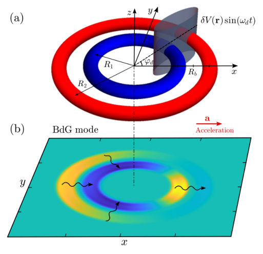
<figcaption class="paper-figure-caption"><b>Fig 1.</b> FIG. 1. Schematic of the dual-ring Bose Josephson junction. (a) Two coaxial toroidal condensates separated by a barrier that supports coherent tunneling between the rings, together with an additional time-dependent potential used to perturb the system. (b) The density modulation of a Bogoliubov mode that becomes active in the population-imbalance dynamics. Arrows indicate the direction of the tunneling flow across the barrier.</figcaption>
</figure>
<figure class="paper-figure-card">
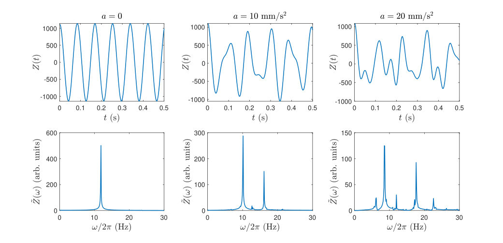
<figcaption class="paper-figure-caption"><b>Fig 2.</b> FIG. 2. Time evolution of the population imbalance Z(t) (top row) and the corresponding Fourier spectra (bottom row) for three values of the acceleration: a = 0 (left column), a = 10 mm/s2 (middle column), and a = 20 mm/s2 (right column). For a nonzero acceleration, Z(t) exhibits a pronounced beating pattern, indicating the presence of several active oscillation frequencies. In the Fourier spectra, the single dominant Josephson peak observed at a = 0 evolves into a multiplet structure whose components shift with increasing acceleration.</figcaption>
</figure>
<figure class="paper-figure-card">
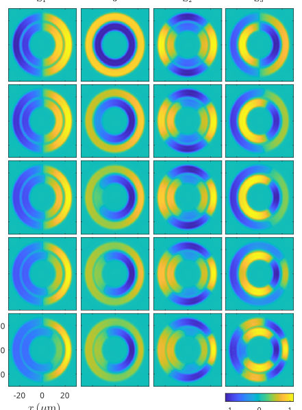
<figcaption class="paper-figure-caption"><b>Fig 3.</b> FIG. 4. Spatial structure of the lowest Bogoliubov modes active in the population-imbalance dynamics, represented by the density perturbation δρn defined in Eq. (17). The rows correspond to a = 0 (top), 5 mm/s2, 10 mm/s2, 15 mm/s2, and 20 mm/s2 (bottom). With increasing acceleration, the mode profiles become progressively distorted and asymmetric, consistent with the growth of their activity in Fig. 5 and with the associated changes in the tunneling dynamics.</figcaption>
</figure>
<figure class="paper-figure-card">
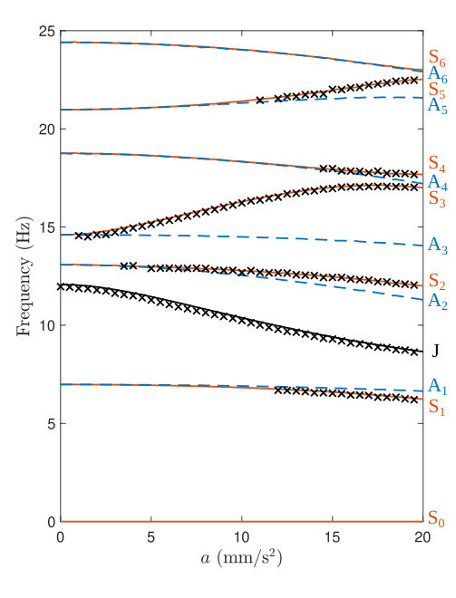
<figcaption class="paper-figure-caption"><b>Fig 4.</b> FIG. 3. Elementary-excitation spectrum as a function of the applied acceleration a. Solid red lines represent modes sym- metric with respect to the x axis (labeled Sn), while dashed blue lines represent antisymmetric modes (labeled An). The zero-frequency Goldstone mode is labeled S0. The mode la- beled J is the principal Josephson mode discussed in the text. For a &gt; 0, symmetry breaking activates additional modes in the population-imbalance dynamics, leading to the multiplet structure seen in Fig. 2. Black crosses denote the peak fre- quencies extracted from the dynamical simulations.</figcaption>
</figure>
<figure class="paper-figure-card">
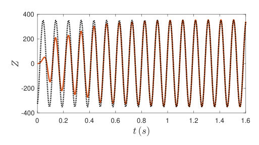
<figcaption class="paper-figure-caption"><b>Fig 5.</b> FIG. 6. Oscillations of the population imbalance Z(t) between the rings under periodic driving with frequency ωd/2π = 10.25 Hz close to the resonance with one of the Bo- goliubov modes. The dissipation parameter γ = 5 × 10−3</figcaption>
</figure>
</div>

<p><strong>Summary.</strong> The paper analyzes Josephson dynamics in a double-ring Bose-Einstein condensate subjected to an external linear acceleration. This acceleration breaks the system's axial symmetry, causing the simple plasma oscillation spectrum to become multi-modal. The authors propose a spectroscopic protocol using localized driving fields to selectively measure these newly activated collective Bogoliubov modes.</p>
<p><strong>Why it may be interesting.</strong> This work provides a concrete, controllable platform (accelerated BECs) to experimentally realize and spectroscopically probe fundamental concepts like symmetry-protected degeneracies and mode coupling in many-body quantum systems.</p>
<details>
<summary>Detailed structure</summary>
<p><strong>Main problem.</strong> The study investigates how an external linear acceleration breaks the axial symmetry of a Bose-Josephson junction formed by two coupled BEC rings, thereby modifying its Josephson dynamics.</p>
<p><strong>Main result.</strong> Acceleration transforms the single Josephson plasma oscillation into a multimode response, activating specific Bogoliubov collective modes whose spectral components can be selectively probed via spectroscopy.</p>
<p><strong>Method.</strong> The analysis employs Gross-Pitaevskii simulations and Bogoliubov-de Gennes (BdG) theory, proposing a mode-resolved spectroscopic protocol using localized periodic driving perturbations.</p>
<p><strong>Model / system.</strong> The system is a coplanar double-ring trap containing $^{87}	ext{Rb}$ atoms in a BEC. The dynamics are modeled by the GPE, incorporating an external linear acceleration term that breaks rotational symmetry.</p>
<p><strong>Key observables.</strong> Population imbalance oscillations ($Z(t)$), Josephson plasma oscillation frequency spectrum, and spectral components corresponding to active Bogoliubov modes.</p>
<p><strong>Important parameters / regimes.</strong> External acceleration magnitude ($a$), driving frequency ($\omega_d$), and the coupling strength/interaction parameter ($g$).</p>
<p><strong>Assumptions / limitations.</strong> The analysis assumes low-energy dynamics allowing for an effective 2D description, and utilizes linear response theory (BdG) in conjunction with dissipative time-dependent methods.</p>
<p><strong>Figures summary.</strong> Figures illustrate the transition from a single spectral peak to a multiplet structure as acceleration increases; they also show mode activity ($D_n$) confirming S-type mode activation and spatial maps of density perturbations ($\delta
ho_n$).</p>
<p><strong>Paper structure.</strong> The paper progresses by first establishing the baseline Josephson dynamics at zero acceleration, then introducing acceleration to induce symmetry breaking, which is theoretically linked to the activation of specific Bogoliubov modes. Finally, it details a spectroscopic protocol using localized driving fields to selectively measure these activated modes.</p>
</details>
<details>
<summary>Abstract</summary>
<p>We study Josephson dynamics in a long atomic Bose-Josephson junction formed by two tunnel-coupled coplanar Bose-Einstein-condensate rings. An in-plane linear acceleration breaks the axial symmetry of the trap and transforms a single Josephson plasma oscillation into a multimode population-imbalance response. Gross-Pitaevskii simulations and Bogoliubov-de Gennes analysis show that the additional spectral components arise from collective modes that acquire finite overlap with the population-imbalance operator under symmetry breaking, with their activation governed by reflection symmetry about the acceleration direction. We also propose a mode-resolved Josephson-spectroscopy protocol based on a weak localized periodic perturbation. Frequency scans reveal resonant amplitude peaks and phase shifts at the eigenfrequencies of active Bogoliubov modes, while angular scans of the drive position provide access to the angular structure of the corresponding mode density perturbations. A dissipative time-dependent Bogoliubov theory yields analytical response functions in quantitative agreement with full Gross-Pitaevskii simulations in the linear regime. Our results demonstrate that accelerated dual-ring condensates provide a controllable platform for symmetry-selected Josephson dynamics and spectroscopic probing of collective modes.</p>
</details>
<p><sub><a href="#top">↑ back to top</a></sub></p>

<p><a id="paper-2606.18911"></a></p>
<h3 id="nonequilibrium-nucleation-theory-for-nonconserved-fields-from-active-matter-to-population-dynamics"><a href="http://arxiv.org/abs/2606.18911v1">Nonequilibrium nucleation theory for nonconserved fields: from active matter to population dynamics</a></h3>
<p><strong>Authors:</strong> Michalis Chatzittofi, Noah Ziethen, Cesare Nardini, Michael E. Cates<br>
<strong>Type:</strong> theory · <strong>Category:</strong> statistical mechanics · <strong>PDF:</strong> <a href="https://arxiv.org/pdf/2606.18911v1">https://arxiv.org/pdf/2606.18911v1</a><br>
<strong>Analysis basis:</strong> full PDF text, analyzed in chunks
<strong>Topic relevance:</strong> 🔥 <code>non-equilibrium dynamics</code> <strong>4/5</strong> · 🔥 <code>non-equilibrium universality</code> <strong>4/5</strong> · <code>Keldysh / 2PI / non-Gaussian methods</code> <strong>3/5</strong> · <code>driven-dissipative phase transition</code> <strong>3/5</strong> · <code>methods for driven-dissipative</code> <strong>3/5</strong> · <code>Frenkel-Kontorova</code> <strong>1/5</strong> · <code>analog quantum simulation</code> <strong>1/5</strong> · <code>correlated / nonlocal dissipation</code> <strong>1/5</strong></p>
<div class="figure-strip-hint">↔ Scroll figures horizontally</div>
<div class="paper-figures-scroll">
<figure class="paper-figure-card">
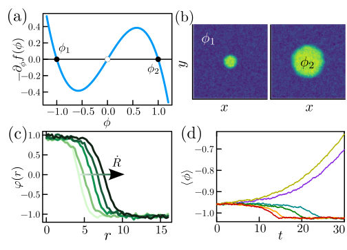
<figcaption class="paper-figure-caption"><b>Fig 1.</b> FIG. 1. (a) Plot of ⟨˙ϕ⟩= −µ against ϕ for spatially homoge- neous states of Active Model A (AMA). The two states ϕ1,2 are locally stable and are denoted by dark circles. (b) Time evolution of a nucleating droplet of stable phase ϕ2 in the metastable phase ϕ1. (c) The droplet expands with a velocity ˙R. The plot reports the time-evolution of the interfacial pro- file (colors from light to dark) as obtained from simulations of AMA. (d) Trajectories of the global density during two suc- cessful and four unsuccessful nucleation events; different lines correspond to different realizations of the stochastic process starting from a spherical droplet with R ≲Rc. Data for pan- els (b–d) corresponds...</figcaption>
</figure>
<figure class="paper-figure-card">
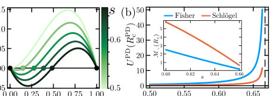
<figcaption class="paper-figure-caption"><b>Fig 2.</b> FIG. 2. (a) The driving force for the two population dynam- ics models, showing the two fixed points of the deterministic dynamics ϕ1 = 0, ϕ2 = 1; the asymmetry between the two species s modifies the location of the unstable fixed point. (b) Barrier heights for different values of asymmetry s show- ing how nucleation probabilities are affected by the form of the noise variance; the inset reports the mobilities M for the two models.</figcaption>
</figure>
<figure class="paper-figure-card">
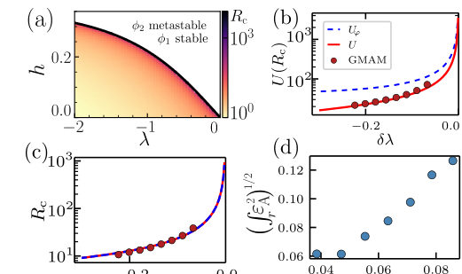
<figcaption class="paper-figure-caption"><b>Fig 3.</b> FIG. 3. Results for AMA in two dimensions: (a) Color map of the critical radius Rc in the NNT limit as a function of activity λ and external field h: ϕ1 (ϕ2) is metastable for finite (infinite) values of Rc, and NNT is valid close to the solid line (where Rc →∞). (b) The quasipotential barrier in the NNT analysis (orange line); in the time-reversed relaxation (TRR) ansatz εA →0 (blue dashed line): and by numerical (GMAM) minimization of the action (dots). (c) The same comparison for the critical radius. (d) Deviation in the interfacial profile between NNT and TRR, quantified via ( R</figcaption>
</figure>
</div>

<p><strong>Summary.</strong> This paper develops a Nonequilibrium Nucleation Theory (NNT) for physical systems where the order parameter is not conserved, extending classical theory. It derives an effective dynamical equation for droplet growth by carefully defining the reaction coordinate. The work demonstrates that non-equilibrium effects significantly alter the nucleation barrier compared to equilibrium predictions, validating the approach using active matter models.</p>
<p><strong>Why it may be interesting.</strong> While focused on classical statistical mechanics, the techniques developed—analyzing rare events in non-equilibrium dynamics via minimum action principles—are highly relevant to understanding quantum tunneling or escape rates in open quantum systems far from equilibrium.</p>
<details>
<summary>Detailed structure</summary>
<p><strong>Main problem.</strong> The primary goal is to develop a Nonequilibrium Nucleation Theory (NNT) that extends Classical Nucleation Theory (CNT) to systems where the order parameter is non-conserved and detailed balance is broken.</p>
<p><strong>Main result.</strong> The authors construct an NNT framework for nonconserved dynamics, showing that the nucleation barrier differs significantly from equilibrium predictions because interfacial profile deviations enter at leading order. This theory successfully predicts results for active matter and population dynamics models.</p>
<p><strong>Method.</strong> The theory involves treating the droplet radius as a 1D reaction coordinate and deriving an effective Langevin equation by systematically expanding the stochastic dynamics, carefully defining the coordinate to project out error terms.</p>
<p><strong>Model / system.</strong> The theory applies to field theories governed by a single, scalar, non-conserved order parameter $\phi(x, t)$, exemplified by active matter models (like Active Model A) and population dynamics systems that violate detailed balance.</p>
<p><strong>Key observables.</strong> Nucleation rate, critical radius ($R_c$), and the quasipotential barrier $U(R)$.</p>
<p><strong>Important parameters / regimes.</strong> Noise variance ($T$), interfacial tension ($\sigma_{eq}$), and the deviation parameter $\epsilon_A$ quantifying profile mismatch.</p>
<p><strong>Assumptions / limitations.</strong> The derivation assumes that fluctuations away from spherical shape are negligible, and it requires careful definition of the reaction coordinate to manage systematic errors arising from projecting out deviations from the time-reversed relaxation path.</p>
<p><strong>Figures summary.</strong> Figures illustrate AMA dynamics (time evolution, interfacial profile) and compare calculated quasipotential barriers ($U(R)$ vs $U_\phi$ vs numerical results), highlighting the deviation $\epsilon_A$.</p>
<p><strong>Paper structure.</strong> The paper builds from the established CNT framework to introduce the necessary modifications for non-equilibrium systems. It derives the generalized Langevin equation for the reaction coordinate, analyzes the resulting quasipotential, and validates these analytical predictions against numerical simulations using active matter models.</p>
</details>
<details>
<summary>Abstract</summary>
<p>Classical nucleation theory (CNT) describes the formation of a stable phase from a metastable one. In equilibrium systems, it quantifies the free-energy competition between a favorable bulk gain and an unfavorable interfacial cost. For systems without detailed balance, the corresponding nonequilibrium nucleation theory (NNT) was so far developed only for cases with a conserved order parameter, such as active fluid-fluid phase separation. Here we construct the NNT for systems with a (single, scalar) nonconserved order parameter. Unlike in the conserved case, the nucleation barrier controlling (noise-driven) droplet growth is profoundly altered by deviations in the interfacial density profile from the one arising during (deterministic) droplet relaxation. The barrier can nonetheless be analysed by carefully defining the reaction coordinate (droplet radius) to project out those deviations. We give explicit NNT predictions for models drawn from population dynamics and active matter, finding excellent agreement with numerical studies.</p>
</details>
<p><sub><a href="#top">↑ back to top</a></sub></p>

<p><a id="paper-2606.18896"></a></p>
<h3 id="thermodynamics-of-photonic-nonlinear-aharonov-bohm-cages"><a href="http://arxiv.org/abs/2606.18896v1">Thermodynamics of photonic nonlinear Aharonov-Bohm cages</a></h3>
<p><strong>Authors:</strong> Stefano Iubini, Carlo Danieli<br>
<strong>Type:</strong> theory · <strong>Category:</strong> statistical mechanics · <strong>PDF:</strong> <a href="https://arxiv.org/pdf/2606.18896v1">https://arxiv.org/pdf/2606.18896v1</a><br>
<strong>Analysis basis:</strong> full PDF text, analyzed in chunks
<strong>Topic relevance:</strong> 🔥 <code>analog quantum simulation</code> <strong>4/5</strong> · <code>driven-dissipative phase transition</code> <strong>3/5</strong> · <code>methods for driven-dissipative</code> <strong>3/5</strong> · <code>non-equilibrium dynamics</code> <strong>3/5</strong> · <code>non-equilibrium universality</code> <strong>2/5</strong> · <code>Frenkel-Kontorova</code> <strong>1/5</strong> · <code>Keldysh / 2PI / non-Gaussian methods</code> <strong>1/5</strong> · <code>correlated / nonlocal dissipation</code> <strong>1/5</strong> · <code>correlated cavity matter</code> <strong>1/5</strong> · <code>entanglement &amp; information structure</code> <strong>1/5</strong></p>
<div class="figure-strip-hint">↔ Scroll figures horizontally</div>
<div class="paper-figures-scroll">
<figure class="paper-figure-card">
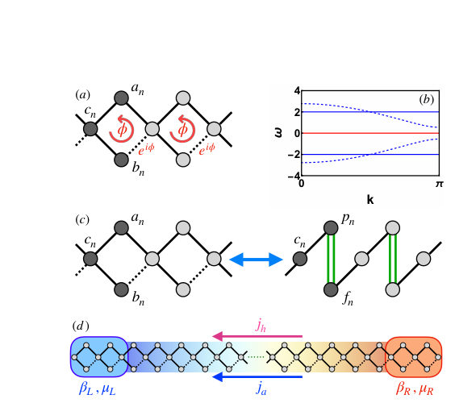
<figcaption class="paper-figure-caption"><b>Fig 1.</b> FIG. 1. Nonlinear Aharonov-Bohm lattice and non- equilibrium setup. (a) Diamond lattice profile with magnetic field of flux ϕ. The black dots indicate the fundamental unit- cell. (b) Band structure for ϕ = π 4 (dashed) and ϕ = π (solid). The ϕ-independent flat band ω0 = 0 is shown in red color. (c) Detangling rotation U of the nonlinear chain for ϕ = π. The black lines represent the linear hopping, while the double green lines represent the nonlinear connections be- tween disconnected trimers. (d) Schematic representation of the MonteCarlo reservoir method, where the left (L) and the right (R) ends of the lattice are connected to a bath (colored in blue and orange respectively) each...</figcaption>
</figure>
<figure class="paper-figure-card">
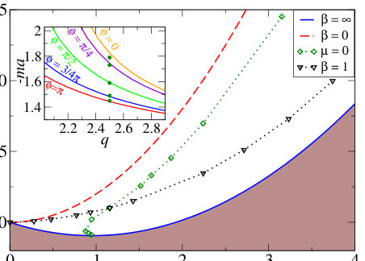
<figcaption class="paper-figure-caption"><b>Fig 2.</b> FIG. 2. Equilibrium phase diagram for γ = 2 and ϕ = π. Symbols refer to equilibrium simulations with N = 20. Inset: harmonic limit. Rescaled average norm −ma versus q accord- ing to Eq. (7) (solid lines). Green circles refer to equilibrium numerical simulations (green circles) performed for q = 2.5 and m = −1 for corresponding values of ϕ. Simulations were performed evolving Eq. (2) in the presence of grand canonical reservoirs. Data shown refer to N = 50 and time averages t = 5 × 106 units.</figcaption>
</figure>
<figure class="paper-figure-card">
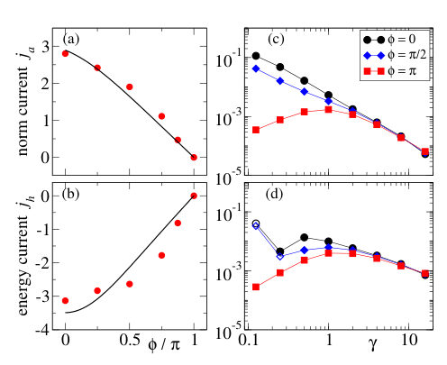
<figcaption class="paper-figure-caption"><b>Fig 3.</b> FIG. 3. Stationary currents of norm (first row) and en- ergy (second row) for βL = 0.2, βR = 0.316, µ = −3.16 and N = 50. (a-b) Dependence of ja and jh on the flux ϕ in the linear limit: symbols refer to numerical simulations, solid curves are obtained from Landauer theory in Eq. (8). Numer- ical fluxes are rescaled by an arbitrary constant factor. (c-d) Dependence of ja and jh on the nonlinear parameter γ for ϕ = 0 (black), ϕ = π</figcaption>
</figure>
<figure class="paper-figure-card">
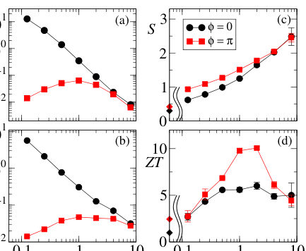
<figcaption class="paper-figure-caption"><b>Fig 4.</b> FIG. 4. Coupled transport in systems. Norm conductivity σ (a), heat conductivity κ (b), Seebeck coefficient S (c) and figure of merit ZT (d) versus γ computed for ϕ = 0 (black) and ϕ = π (red) with N = 100, β = 0.32 and m = −1. Diamonds in (c,d), correspond to analytical estimates for γ = 0 via Landauer theory.</figcaption>
</figure>
<figure class="paper-figure-card">
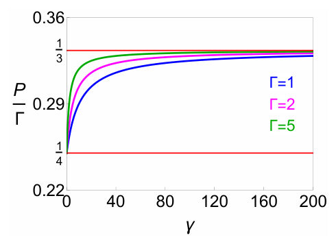
<figcaption class="paper-figure-caption"><b>Fig 5.</b> FIG. 5. Positive real root P of the polynomial f(P, Γ, γ) rescaled by constant Γ as function the nonlinear strength γ for Γ = 1 (blue), Γ = 2 (magenta), and Γ = 5 (green).</figcaption>
</figure>
</div>

<p><strong>Summary.</strong> This paper analyzes the thermodynamics and transport properties of nonlinear photonic lattices subjected to an artificial magnetic flux. By controlling this flux, the system can be tuned from a conductor to an insulator, or its thermoelectric efficiency can be significantly enhanced. The methodology combines advanced statistical mechanics with quantum transport theory.</p>
<p><strong>Why it may be interesting.</strong> This work provides a concrete, tunable platform—photonic lattices—to study fundamental concepts of quantum transport, including the interplay between geometric constraints (caging) and nonlinearity in optimizing energy conversion devices.</p>
<details>
<summary>Detailed structure</summary>
<p><strong>Main problem.</strong> The study investigates the equilibrium and non-equilibrium thermodynamics of photonic lattices exhibiting Kerr nonlinearity, focusing on how a synthetic magnetic flux controls transport properties.</p>
<p><strong>Main result.</strong> Tuning the synthetic magnetic flux can transform the system between conducting and insulating states at weak nonlinearity, while intermediate nonlinearities significantly enhance thermoelectric performance by optimizing current channels.</p>
<p><strong>Method.</strong> The authors employ thermodynamic formalism, linear response theory (Onsager relations), and Landauer theory to calculate transport coefficients like conductivity and Seebeck coefficient.</p>
<p><strong>Model / system.</strong> The system is a quasi 1D photonic diamond lattice threaded by a synthetic magnetic flux ($\phi$) and possessing local Kerr nonlinearity ($\gamma$). The dynamics are analyzed using coupled field equations derived from the Hamiltonian.</p>
<p><strong>Key observables.</strong> Average norm density ($a$), energy density ($h$), heat current, norm current ($j_a$), Seebeck coefficient ($S$), and thermoelectric figure of merit ($ZT$).</p>
<p><strong>Important parameters / regimes.</strong> Synthetic magnetic flux ($\phi$), nonlinear strength ($\gamma$), temperature/chemical potential imbalances ($eta, \mu$). Key regimes include the linear limit ($\gamma=0$) and the Aharonov-Bohm caging condition ($\phi=\pi$).</p>
<p><strong>Assumptions / limitations.</strong> The analysis assumes specific boundary conditions (Monte Carlo reservoirs) for non-equilibrium calculations and utilizes approximations like Gaussian integrals in normal mode expansions.</p>
<p><strong>Figures summary.</strong> Figures illustrate band structures showing flat bands at $\phi=\pi$, phase diagrams mapping accessible thermodynamic regions, and plots detailing the dependence of currents ($j_a, j_h$) on flux ($\phi$) and nonlinearity ($\gamma$).</p>
<p><strong>Paper structure.</strong> The paper progresses by first establishing the model Hamiltonian and analyzing equilibrium states (phase diagrams). It then moves to non-equilibrium transport using Landauer theory and Onsager relations to quantify how $\phi$ and $\gamma$ control currents and thermoelectric efficiency.</p>
</details>
<details>
<summary>Abstract</summary>
<p>We investigate equilibrium and non-equilibrium thermodynamics of one-dimensional photonic diamond lattices with Kerr nonlinearity. The equilibrium phase diagram is obtained as a function of the synthetic magnetic flux acting on each plaquette. In the linear regime, the magnetic flux can induce Aharonov-Bohm caging, flattening all Bloch bands and suppressing particle and energy currents. In this caging regime, non-vanishing currents are enabled by nonlinearity. By imposing stationary temperature- and chemical potential- imbalances at the system boundaries, we show that at weak nonlinearity fine tuning the flux at the Aharonov-Bohm caging transforms the system from a conductor to an insulator. For intermediate nonlinear strength, the system remains conducting for all magnetic fluxes; however, the caging condition significantly enhances the Seebeck coefficient and thermoelectric figure of merit, improving the thermoelectric features of the system. Our results give evidence of a novel route towards optimization of coupled transport devices, based on the control of linear versus nonlinear conduction channels via a synthetic magnetic flux.</p>
</details>
<p><sub><a href="#top">↑ back to top</a></sub></p>

<p><a id="paper-2606.18340"></a></p>
<h3 id="chaos-from-quantum-bath-fluctuations"><a href="http://arxiv.org/abs/2606.18340v1">Chaos from quantum bath fluctuations</a></h3>
<p><strong>Authors:</strong> Ilan Baud, Tamoghna Ray, Mahaveer Prasad, Manas Kulkarni, Camille Aron<br>
<strong>Type:</strong> theory · <strong>Category:</strong> statistical mechanics · <strong>PDF:</strong> <a href="https://arxiv.org/pdf/2606.18340v1">https://arxiv.org/pdf/2606.18340v1</a><br>
<strong>Analysis basis:</strong> full PDF text, analyzed in chunks
<strong>Topic relevance:</strong> 🔥 <code>Keldysh / 2PI / non-Gaussian methods</code> <strong>4/5</strong> · <code>driven-dissipative phase transition</code> <strong>3/5</strong> · <code>methods for driven-dissipative</code> <strong>3/5</strong> · <code>non-equilibrium dynamics</code> <strong>3/5</strong> · <code>correlated / nonlocal dissipation</code> <strong>2/5</strong> · <code>non-equilibrium universality</code> <strong>2/5</strong> · <code>Tavis-Cummings &amp; cavity-many-emitter</code> <strong>1/5</strong> · <code>correlated cavity matter</code> <strong>1/5</strong></p>
<div class="figure-strip-hint">↔ Scroll figures horizontally</div>
<div class="paper-figures-scroll">
<figure class="paper-figure-card">
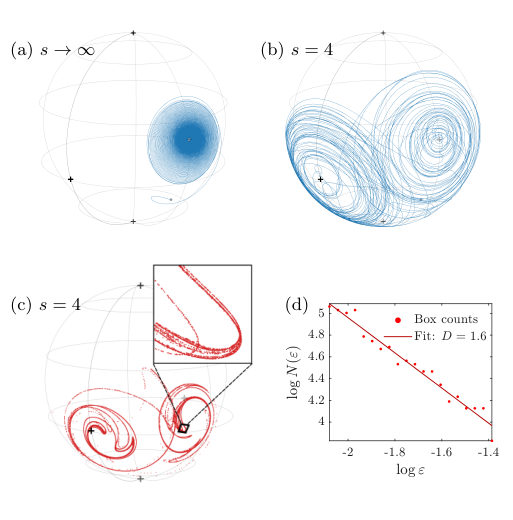
<figcaption class="paper-figure-caption"><b>Fig 1.</b> FIG. 1. Noise-induced chaotic attractor for λ &gt; λc. Rep- resentative spin trajectories: (a) classical dissipative Dicke model in the limit s →∞, and (b) stochastic Dicke model at s = 4, both initialized at the black dot and with dynamics governed by Eqs. (3). Black crosses denote the four classical fixed points. (c) Random strange attractor at s = 4 (inset: zoom), obtained from pullback dynamics for a fixed noise real- ization and N0 = 105 initial conditions. (d) Box-counting es- timate of the fractal dimension of the strange attractor shown in (c), embedded in a four-dimensional phase space, yielding D ≈1.6. Parameters: ωs = ωc = 1, κ = 0.5, λ = 1.0.</figcaption>
</figure>
<figure class="paper-figure-card">
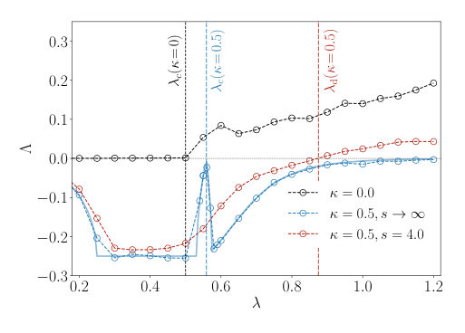
<figcaption class="paper-figure-caption"><b>Fig 2.</b> FIG. 2. Effects of the dissipative environment on the Lya- punov exponent Λ. Closed Dicke model, κ = 0 (black): the dynamics are chaotic Λ &gt; 0 for spin-boson interactions λ ≳λc. Classical dissipative Dicke model, κ = 0.5, s →∞ (blue): non-chaotic dynamics: Λ ≤0 for all λ, matching the exact prediction from linearized dynamics (solid blue). Stochastic Dicke model, κ = 0.5, s = 4 (red): finite-spin quantum fluctuations restores chaotic dynamics Λ &gt; 0 for λ &gt; λd &gt; λc. Parameters: ωs = ωc = 1 (10 initial states and 50 noise histories per initial state).</figcaption>
</figure>
<figure class="paper-figure-card">
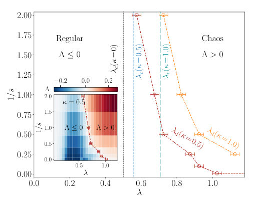
<figcaption class="paper-figure-caption"><b>Fig 3.</b> FIG. 3. Dynamical phase diagram in the coupling λ vs noise strength 1/s plane for several values of κ. The thermody- namical phase transitions at s →∞are located at λc marked by the vertical lines. The dynamical thresholds λd separat- ing non-chaotic (Λ ≤0) and chaotic (Λ &gt; 0) regimes were extracted from data analogous to the finite-s results shown in Fig. 2. Error bars are set by the bin size in λ. Inset: heat map of the Lyapunov exponent for κ = 0.5. Parameters: ωs = ωc = 1 (10 initial states and 50 noise histories per initial state).</figcaption>
</figure>
</div>

<p><strong>Summary.</strong> The paper investigates chaos generation in the dissipative Dicke model by analyzing the effect of quantum noise from a thermal bath. Using semiclassical approximations, they show that while the classical dynamics are regular, finite environmental fluctuations drive the system into a random strange attractor with positive Lyapunov exponents. This establishes a mechanism where environmental coupling can induce complex chaotic behavior.</p>
<p><strong>Why it may be interesting.</strong> This work directly addresses non-equilibrium quantum dynamics, showing how environmental coupling can fundamentally alter system behavior from stable to chaotic, which is crucial for understanding open quantum systems.</p>
<details>
<summary>Detailed structure</summary>
<p><strong>Main problem.</strong> The core problem is investigating whether quantum fluctuations originating from a zero-temperature environment can induce deterministic chaos in a physical system that is otherwise classically regular.</p>
<p><strong>Main result.</strong> Quantum noise successfully generates a random strange attractor characterized by a positive Lyapunov exponent, even when the underlying classical dynamics are stable and non-chaotic.</p>
<p><strong>Method.</strong> The analysis employs semiclassical approximations (Truncated Wigner Approximation) to derive stochastic differential equations (SDEs), followed by numerical simulation of these SDEs and calculation of Lyapunov exponents and fractal dimensions.</p>
<p><strong>Model / system.</strong> The study uses the dissipative Dicke model, which describes an electric-dipole interaction between a collective spin and a leaky cavity mode. The dynamics are governed by a Lindblad master equation mapped onto stochastic equations in the semiclassical limit (large but finite spin $s$).</p>
<p><strong>Key observables.</strong> Lyapunov exponent ($\Lambda$), fractal dimension ($D$), and the structure of the random attractor $\mathcal{A}_\xi$.</p>
<p><strong>Important parameters / regimes.</strong> Dissipation rate ($\kappa$), coupling constant ($\lambda$), and the noise strength parameter ($1/s$). The superradiant regime ($\lambda > \lambda_c$) is key for chaos generation.</p>
<p><strong>Assumptions / limitations.</strong> The analysis relies on the semiclassical limit ($s$ large but finite) and uses the Truncated Wigner Approximation, which neglects intrinsic quantum fluctuations while retaining environmental noise terms.</p>
<p><strong>Figures summary.</strong> Figures illustrate the transition from deterministic convergence to superradiant fixed points (classical limit) to the emergence of a random strange attractor via stochastic dynamics. Box-counting estimates confirm fractal dimensions ($D \approx 1.6$).</p>
<p><strong>Paper structure.</strong> The paper develops the semiclassical description using the Wigner function, derives the resulting SDEs for the dissipative Dicke model, and then analyzes the stability of the attractors by calculating Lyapunov exponents in different parameter regimes ($\lambda$ vs $s$).</p>
</details>
<details>
<summary>Abstract</summary>
<p>The effect of a large environment on a finite-size quantum mechanical system is two-fold: It brings dissipation, but also fluctuations of thermal and quantum origin. While dissipation tends to stabilize the dynamics, we question if and how environmental quantum fluctuations can generate chaos in an otherwise classically non-chaotic system. We work out a paradigmatic model of quantum optics: the dissipative Dicke model, where a large spin interacts with a dissipative harmonic mode. We dial in the classical/quantum correspondence by working in the semiclassical regime at large but finite spin. We demonstrate that, starting from a classically regular phase space in the superradiant regime, quantum noise can generate a strange attractor with fractal dimension and a positive Lyapunov exponent. We unveil the deep connection with shear-induced chaos that was recently developed in the mathematical community.</p>
</details>
<p><sub><a href="#top">↑ back to top</a></sub></p>

<p><a id="paper-2606.19290"></a></p>
<h3 id="on-operator-product-expansion-in-the-spin-orbit-coupled-bosonic-system"><a href="http://arxiv.org/abs/2606.19290v1">On operator product expansion in the spin-orbit coupled bosonic system</a></h3>
<p><strong>Authors:</strong> Rajesh Kumar Gupta, Siddhant Tiwari<br>
<strong>Type:</strong> theory · <strong>Category:</strong> quantum gases · <strong>PDF:</strong> <a href="https://arxiv.org/pdf/2606.19290v1">https://arxiv.org/pdf/2606.19290v1</a><br>
<strong>Analysis basis:</strong> full PDF text, analyzed in chunks
<strong>Topic relevance:</strong> 🔥 <code>analog quantum simulation</code> <strong>4/5</strong> · <code>Keldysh / 2PI / non-Gaussian methods</code> <strong>3/5</strong> · <code>driven-dissipative phase transition</code> <strong>2/5</strong> · <code>methods for driven-dissipative</code> <strong>2/5</strong> · <code>non-equilibrium dynamics</code> <strong>2/5</strong> · <code>non-equilibrium universality</code> <strong>2/5</strong> · <code>correlated cavity matter</code> <strong>1/5</strong> · <code>entanglement &amp; information structure</code> <strong>1/5</strong> · <code>exotic spin models in light-matter</code> <strong>1/5</strong> · <code>spintronics-quantum-optics interface</code> <strong>1/5</strong></p>
<div class="figure-strip-hint">↔ Scroll figures horizontally</div>
<div class="paper-figures-scroll">
<figure class="paper-figure-card">
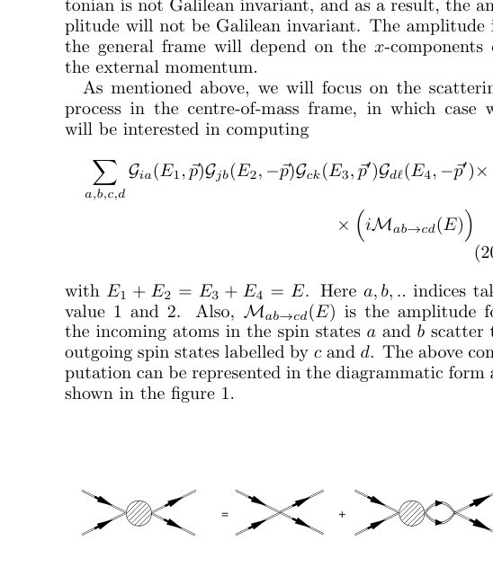
<figcaption class="paper-figure-caption"><b>Fig 1.</b> FIG. 1: The 2→2 scattering diagram. The double line repre- sents the matrix valued propagator.</figcaption>
</figure>
<figure class="paper-figure-card">
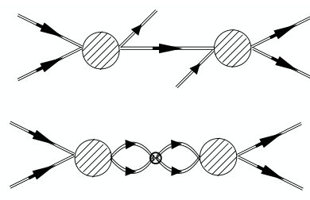
<figcaption class="paper-figure-caption"><b>Fig 2.</b> FIG. 2: The figure in (a) computes the expectation value of the operator ψ† σ(⃗r) and ψ† σ′(⃗r′). The figure in (b) computes the expectation value of the local operator ψ† aψ† bψcψd(⃗r).</figcaption>
</figure>
</div>

<p><strong>Summary.</strong> This paper develops the Operator Product Expansion for bosonic fields in a spin-orbit coupled Bose gas. By calculating the short-distance expansion of field products, it determines contact densities that characterize various quantum phases like supersolidity. The methodology combines advanced many-body theory with detailed calculations involving Green's functions and scattering amplitudes.</p>
<p><strong>Why it may be interesting.</strong> This work provides rigorous theoretical tools (OPE) to probe universal physics near quantum critical points in controllable ultracold atomic systems, linking microscopic interactions to macroscopic phase behavior.</p>
<details>
<summary>Detailed structure</summary>
<p><strong>Main problem.</strong> The primary goal is deriving the Operator Product Expansion (OPE) for two separated bosonic field operators in a spin-orbit coupled system, with a specific focus on calculating the contact density term.</p>
<p><strong>Main result.</strong> The OPE coefficients and contact densities are derived analytically, showing explicit functional forms dependent on coupling constants ($g, \lambda$) and exhibiting distinct behaviors across different quantum phases (e.g., supersolidity).</p>
<p><strong>Method.</strong> The analysis employs advanced many-body techniques including the LSZ reduction formula, Feynman diagram calculations for scattering amplitudes, and evaluating bilocal operators using Green's functions in momentum space.</p>
<p><strong>Model / system.</strong> The system is an ultra-cold bosonic gas modeled by pseudo-spinor bosons subjected to spin-orbit coupling induced by counter-propagating laser beams. The Hamiltonian includes kinetic energy, Rabi/Raman coupling ($\Omega$), and interaction terms ($g, \lambda$).</p>
<p><strong>Key observables.</strong> OPE coefficients $C_{\sigma\sigma', n}(\vec{r})$, scattering amplitudes ($M_{ab 	o cd}(E)$), and contact densities like $\langle (\psi^\dagger_i \psi_i)^2 
angle$.</p>
<p><strong>Important parameters / regimes.</strong> Coupling constants ($\Omega, g, \lambda$), momentum transfer ($\vec{k}$), and the separation distance ($\vec{r}$) used in the OPE.</p>
<p><strong>Assumptions / limitations.</strong> The analysis often focuses on the leading non-analytic terms proportional to $\vec{r}$, ignores contributions analytic in $\vec{r}$, and sometimes restricts calculations to specific limits like the coherent coupling case ($\kappa_0=0$).</p>
<p><strong>Figures summary.</strong> Not specified, but the notes detail equations (e.g., Eq 39, 42, 47) presenting derived functional forms for OPEs and contact densities.</p>
<p><strong>Paper structure.</strong> The paper progresses from setting up the Hamiltonian and diagonalizing single-particle operators to deriving scattering amplitudes via one-loop integrals, culminating in explicit derivations of the OPE structure and analyzing how contact densities change across different quantum phases.</p>
</details>
<details>
<summary>Abstract</summary>
<p>Ultra-cold bosonic systems can be tuned to exhibit quantum phase transitions. For example, the Rabi-coupled bosonic system exhibits ferromagnetic and paramagnetic phases, whereas the spin-orbit-coupled system exhibits exciting phases such as supersolidity. The physics of these phases and phase transitions is very rich. It is an important topic of research to probe these phases and phase transitions using various tools in many-body physics. The operator product expansion (OPE) provides one such tool. It expresses the product of two separated operators as a series expansion of local operators. In this article, we will derive the OPE of two operators $ψ^\dagger_σ(\vec r)$ and $ψ_{σ'}(\vec r')$. More specifically, we look for the contact density term, which controls many of the universal physics of the underlying bosonic system.</p>
</details>
<p><sub><a href="#top">↑ back to top</a></sub></p>

<p><a id="paper-2606.18755"></a></p>
<h3 id="quantum-simulation-of-neutrino-oscillations-with-bosonic-encoding"><a href="http://arxiv.org/abs/2606.18755v1">Quantum simulation of neutrino oscillations with bosonic encoding</a></h3>
<p><strong>Authors:</strong> Sandeep Joshi<br>
<strong>Type:</strong> theory · <strong>Category:</strong> other · <strong>PDF:</strong> <a href="https://arxiv.org/pdf/2606.18755v1">https://arxiv.org/pdf/2606.18755v1</a><br>
<strong>Analysis basis:</strong> full PDF text, analyzed in chunks
<strong>Topic relevance:</strong> 🔥 <code>analog quantum simulation</code> <strong>4/5</strong> · <code>correlated cavity matter</code> <strong>3/5</strong> · <code>quantum optics experiment</code> <strong>3/5</strong> · <code>QC/QI experiment</code> <strong>2/5</strong> · <code>Tavis-Cummings &amp; cavity-many-emitter</code> <strong>2/5</strong> · <code>correlated / nonlocal dissipation</code> <strong>1/5</strong> · <code>driven-dissipative phase transition</code> <strong>1/5</strong> · <code>entanglement &amp; information structure</code> <strong>1/5</strong> · <code>methods for driven-dissipative</code> <strong>1/5</strong> · <code>non-equilibrium dynamics</code> <strong>1/5</strong></p>
<div class="figure-strip-hint">↔ Scroll figures horizontally</div>
<div class="paper-figures-scroll">
<figure class="paper-figure-card">
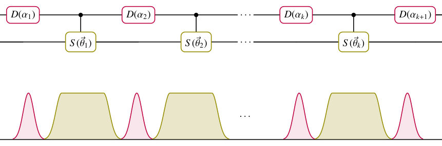
<figcaption class="paper-figure-caption"><b>Fig 1.</b> Figure 1: Universal control of a cavity bosonic mode using displacement and SNAP gates. An arbitrary unitary operation in a d-dimensional cavity subspace can be decomposed into a sequence of k + 1 displacement gates, D(α), and k SNAP gates, S (⃗θ). In this work, displacement operations are implemented using short Gaussian-shaped control pulses applied through cavity drive, while SNAP gates are realized using longer flat-top Gaussian pulses that induce photon-number- dependent rotations of the ancilla qubit. Together, these operations provide universal control over the cavity Hilbert space.</figcaption>
</figure>
<figure class="paper-figure-card">

<figcaption class="paper-figure-caption"><b>Fig 2.</b> Figure 2: Quantum simulation of two-flavor neutrino vacuum oscillation for the Fock-state-encoded cavity qubits. The solid line represents the theoretical prediction (θvac = 33.5◦, ∆m2 = 7.5×10−5 eV2), while the symbols correspond to the quantum simulation results obtained using direct compilation [Eq. (21)] and pulse-level simulation [Appendix A].</figcaption>
</figure>
<figure class="paper-figure-card">

<figcaption class="paper-figure-caption"><b>Fig 3.</b> Figure 3: Wigner function of the neutrino flavor state |νµ⟩, initially encoded in the cavity Fock state |1⟩. As the neutrino propagates, flavor mixing causes the encoded cavity state to evolve. The top row shows the theoretically predicted states, while the bottom row shows the corresponding pulse-level simulation results.</figcaption>
</figure>
<figure class="paper-figure-card">

<figcaption class="paper-figure-caption"><b>Fig 4.</b> Figure 4: Pulse-level simulation of three-flavor neutrino oscillations. The three flavor states are encoded in the cavity Fock subspace {|0⟩, |1⟩, |2⟩}. The neutrino mixing matrix is compiled using two building blocks of the form (B.1) and the parameters of the SNAP and displacement gates are optimized numerically using the qgrad package.</figcaption>
</figure>
</div>

<p><strong>Summary.</strong> The paper details the use of superconducting microwave cavities with bosonic encoding to simulate fundamental particle physics processes, specifically neutrino oscillations. By synthesizing arbitrary unitary gates using Displacement and SNAP operations, the authors demonstrate that this cavity platform can accurately model these complex quantum dynamics. This establishes a strong link between advanced quantum control in circuit QED and high-energy physics simulation.</p>
<p><strong>Why it may be interesting.</strong> This work is highly relevant as it combines advanced quantum control techniques (pulse shaping, gate synthesis) within a solid-state platform (Circuit QED) to simulate complex many-body physics problems like neutrino oscillations, which is a core area of AMO research.</p>
<details>
<summary>Detailed structure</summary>
<p><strong>Main problem.</strong> The primary goal is the quantum simulation of two- and three-flavor neutrino oscillations using superconducting circuits.</p>
<p><strong>Main result.</strong> The authors demonstrate that cavity-based bosonic encoding provides a viable platform for this simulation, showing agreement between simulated probabilities and theoretical predictions.</p>
<p><strong>Method.</strong> They implement required unitary operations by combining Displacement gates and Selective Number-dependent Arbitrary Phase (SNAP) gates through carefully designed pulse sequences.</p>
<p><strong>Model / system.</strong> The system uses superconducting qubits coupled to a microwave cavity mode. Information is encoded in the bosonic Fock states of the cavity ($\{|n
angle\}$), allowing for qudit representation, which is controlled via dispersive coupling and ancillary qubit manipulation.</p>
<p><strong>Key observables.</strong> Neutrino oscillation probabilities (e.g., $P(
u_e     o 
u_e)$) and state evolution visualized via Wigner functions.</p>
<p><strong>Important parameters / regimes.</strong> Coherence times ($T_1, T_\phi$), cavity frequency ($\omega_c$), coupling strength ($\chi$), and mixing parameters ($\Delta m^2, 	heta$).</p>
<p><strong>Assumptions / limitations.</strong> The control scheme relies on the dispersive regime ($\Delta \gg g$) and uses approximations for gate implementation (e.g., perturbative expansion for small rotations). Pulse-level simulations incorporate Lindblad master equation dynamics.</p>
<p><strong>Figures summary.</strong> Figures illustrate the decomposition of arbitrary unitaries into SNAP/Displacement gates, compare simulated vs. theoretical oscillation probabilities for two-flavor mixing, and show Wigner function evolution.</p>
<p><strong>Paper structure.</strong> The paper first details the universal control scheme using bosonic encoding (D and S gates). It then applies this framework to compile the necessary unitaries for simulating neutrino oscillations in both two- and three-flavor scenarios, comparing direct compilation vs. pulse-level simulation results.</p>
</details>
<details>
<summary>Abstract</summary>
<p>Superconducting qubits offer a versatile platform for quantum simulation. In this architecture, quantum information can be encoded in the bosonic modes of a microwave cavity, offering an alternative to conventional qubit-based encoding schemes. These cavity bosonic modes can be manipulated using a single ancillary qubit. In this work, we investigate the quantum simulation of two- and three-flavor neutrino oscillations using Fock-basis encoding of a cavity mode. We design pulse sequences for implementing the required unitary operations through selective number-dependent arbitrary phase (SNAP) and displacement gates. Pulse-level control is employed to realize high-fidelity gate operations on the encoded cavity mode. The resulting neutrino oscillation probabilities obtained from quantum simulation exhibit close agreement with the corresponding theoretical predictions, demonstrating the feasibility of cavity-based bosonic encoding schemes for quantum simulation.</p>
</details>
<p><sub><a href="#top">↑ back to top</a></sub></p>

<p><a id="paper-2606.18720"></a></p>
<h3 id="memory-assisted-advantage-for-state-transfer-in-disordered-quantum-many-body-scar-system"><a href="http://arxiv.org/abs/2606.18720v1">Memory-assisted advantage for state transfer in disordered quantum many-body scar system</a></h3>
<p><strong>Authors:</strong> Paranjoy Chaki, Ujjwal Sen<br>
<strong>Type:</strong> theory · <strong>Category:</strong> disordered systems and neural networks · <strong>PDF:</strong> <a href="https://arxiv.org/pdf/2606.18720v1">https://arxiv.org/pdf/2606.18720v1</a><br>
<strong>Analysis basis:</strong> full PDF text, analyzed in chunks
<strong>Topic relevance:</strong> 🔥 <code>analog quantum simulation</code> <strong>4/5</strong> · 🔥 <code>scars &amp; prethermalization</code> <strong>4/5</strong> · <code>entanglement &amp; information structure</code> <strong>2/5</strong> · <code>non-equilibrium dynamics</code> <strong>2/5</strong> · <code>non-equilibrium universality</code> <strong>2/5</strong> · <code>Keldysh / 2PI / non-Gaussian methods</code> <strong>1/5</strong> · <code>correlated / nonlocal dissipation</code> <strong>1/5</strong> · <code>driven-dissipative phase transition</code> <strong>1/5</strong> · <code>methods for driven-dissipative</code> <strong>1/5</strong></p>
<div class="figure-strip-hint">↔ Scroll figures horizontally</div>
<div class="paper-figures-scroll">
<figure class="paper-figure-card">

<figcaption class="paper-figure-caption"><b>Fig 1.</b> Figure 1. Schematic representation of quantum state transfer through a disordered many-body scar system. In this schematic diagram, we present a pictorial illustration of quantum state transfer through a disordered many-body scar system. Alice aims to transfer her state |ψ(0)⟩to Bob through the time evolution governed by the disordered many-body scar Hamiltonian. Here, the total system size is L, and the remaining L−1 spins in the chain are initially prepared in the state |0⟩⊗(L−1).</figcaption>
</figure>
<figure class="paper-figure-card">

<figcaption class="paper-figure-caption"><b>Fig 2.</b> Figure 2. Behavior of σt with time t and σ0. We plot the standard deviation σt with time t, and σ0 is depicted by a sequential color plot. Here the time (t) axes and σ0 are taken along the horizontal plane, and σt is plotted along the vertical axes.</figcaption>
</figure>
<figure class="paper-figure-card">

<figcaption class="paper-figure-caption"><b>Fig 3.</b> Figure 3. Variation of maximum fidelity and fidelity area with disorder strengths. In panel (a), we plot the variation of the transfer fidelity ¯F with time (t). The curve corresponding to the clean system is represented by the smooth violet line, while the curves corresponding to uniform, Gaussian, and time-dependent memoryful disorder are shown by the dashed orange and dotted blue lines, respectively. The horizontal dashed line at 2/3 represents the classical fidelity Fc. The shaded region above this line under the dynamical fidelity curve denotes the regime where the fidelity exceeds the classical fidelity. Panel (b) shows the variation of the maximum fidelity ¯FM with the disorder...</figcaption>
</figure>
<figure class="paper-figure-card">

<figcaption class="paper-figure-caption"><b>Fig 4.</b> Figure 4. Behavior of the degree of scarness as a function of disorder strength. Here we plot ¯S as a function of σ for Gaus- sian, uniform, and memoryful disorder. The blue, orange, and green dashed curves with square markers denote Gaussian, uni- form, and time-dependent (memoryful) disorder. In the inset, we plot ⟨σz⟩loc t as a function of t corresponding to Gaussian disor- der for different disorder strengths σ. The different values σ = 0.00, 0.04, 0.08, 0.12, 0.16, 0.20 are represented by sequential col- ors with varying intensity. The whole study is done for λ = 1, h = 1/2, and system size L = 16.</figcaption>
</figure>
<figure class="paper-figure-card">

<figcaption class="paper-figure-caption"><b>Fig 5.</b> Figure 5. Scaling of ¯FM and ¯FM with system size (L). In panel (a), we present the maximum fidelity ¯FM as a function of the system size L, considering to L = 10, 11, 12, 13, 14, .., 22, 23. The orange, blue, and green dashed curves with circular markers correspond to uniform, Gaussian, and time-dependent memoryful disorders, respectively. Panel (b) shows the corresponding behavior of ¯FA for the same range of system sizes. The data points are represented using the same type of markers and color for the three types of disorders as in panel (a), but with different line styles (smooth lines). In panel (c), we perform a scaling analysis of ¯FM, demonstrating a clear log-log scaling behavior....</figcaption>
</figure>
</div>

<p><strong>Summary.</strong> The paper analyzes Quantum State Transfer in disordered many-body scar systems, comparing memoryful disorder against memoryless types. It finds that the presence of 'memory' in the disorder significantly boosts state transfer fidelity and robustness. This enhancement is linked to increased scarness and nonergodicity, suggesting a mechanism for designing quantum channels resistant to noise.</p>
<p><strong>Why it may be interesting.</strong> This work directly addresses how structured randomness (memory) can stabilize quantum information transfer in complex many-body systems, which is crucial for understanding robust quantum computation protocols in realistic noisy environments.</p>
<details>
<summary>Detailed structure</summary>
<p><strong>Main problem.</strong> The study investigates how incorporating 'memory' into disorder affects quantum communication, specifically Quantum State Transfer (QST), within many-body scar systems.</p>
<p><strong>Main result.</strong> Memoryful disorder significantly enhances QST performance compared to memoryless disorders (uniform or Gaussian). This enhancement is correlated with a higher degree of scarness and larger Inverse Participation Ratios (IPR) for the optimal state.</p>
<p><strong>Method.</strong> The analysis compares different disorder types using fidelity measures ($ar{F}_M$, $ar{F}_A$) and performs finite-size scaling analyses on these metrics. It also calculates the IPR to diagnose nonergodicity effects.</p>
<p><strong>Model / system.</strong> The system is a one-dimensional many-body scar system governed by a complex Hamiltonian involving nearest-neighbor couplings and three-body interaction terms, subjected to disorder modeled as memoryful or memoryless (uniform/Gaussian).</p>
<p><strong>Key observables.</strong> Maximum transfer fidelity ($ar{F}_M$), Fidelity Area ($ar{F}_A$), Degree of Scarness ($ar{S}$), Inverse Participation Ratio ($ ext{IPRM}$, $   ext{IPRA}$).</p>
<p><strong>Important parameters / regimes.</strong> Disorder strength ($\sigma$), System size ($L$), and the type of disorder (memoryful vs. memoryless).</p>
<p><strong>Assumptions / limitations.</strong> The analysis assumes that higher scarness and nonergodicity, promoted by memoryful disorder, are key factors enhancing state transfer fidelity.</p>
<p><strong>Figures summary.</strong> Figures illustrate QST schematics, show the decay of $ar{F}_M$ and $ar{F}_A$ vs. disorder strength ($\sigma$), plot $ar{S}$ vs. $\sigma$, and display scaling analysis results for $ar{F}_M$ and $ar{F}_A$ with system size $L$.</p>
<p><strong>Paper structure.</strong> The paper systematically compares three disorder types, quantifying performance using fidelity metrics, analyzing the role of scarness via revival measurements, and finally confirming the benefit of memory effects through scaling analysis and IPR calculations.</p>
</details>
<details>
<summary>Abstract</summary>
<p>We analyze how memory in disorder facilitates quantum communication in many-body scar systems. We consider three distinct types of disorder, viz., memoryful, and memoryless uniform and Gaussian, and compare their respective performances in facilitating quantum state transfer. Using the maximum transfer fidelity and fidelity area as figures of merit, we find that memoryful disorder yields a better performance than the memoryless disordered channels. Furthermore, the maximum transfer fidelity exhibits an initial parabolic decay with disorder strength, followed by a linear decrease, for all the disorder models considered. We introduce a degree of scarness, and show that it is higher for memoryful disorder in comparison to memoryless disorders, implying a role of scarness in the quantum state transfer protocol. We further perform a scaling analysis, revealing that memory effect in disorder is not only beneficial for short-distance but also long-distance quantum state transfer. Finally, we show that the state yielding the maximum transfer fidelity has larger inverse participation ratio for memoryful disorder in comparison to the other two disorders, highlighting the role of nonergodicity in enhancing state transfer.</p>
</details>
<p><sub><a href="#top">↑ back to top</a></sub></p>

<p><a id="paper-2606.19339"></a></p>
<h3 id="quantum-solitons-and-their-quantum-walks-in-transmon-arrays"><a href="http://arxiv.org/abs/2606.19339v1">Quantum solitons and their quantum walks in transmon arrays</a></h3>
<p><strong>Authors:</strong> Ben Blain, Giampiero Marchegiani, Luigi Amico, Gianluigi Catelani<br>
<strong>Type:</strong> theory · <strong>Category:</strong> other · <strong>PDF:</strong> <a href="https://arxiv.org/pdf/2606.19339v1">https://arxiv.org/pdf/2606.19339v1</a><br>
<strong>Analysis basis:</strong> full PDF text, analyzed in chunks
<strong>Topic relevance:</strong> 🔥 <code>analog quantum simulation</code> <strong>4/5</strong> · <code>non-equilibrium dynamics</code> <strong>3/5</strong> · <code>driven-dissipative phase transition</code> <strong>2/5</strong> · <code>methods for driven-dissipative</code> <strong>2/5</strong> · <code>non-equilibrium universality</code> <strong>2/5</strong> · <code>Frenkel-Kontorova</code> <strong>1/5</strong> · <code>Keldysh / 2PI / non-Gaussian methods</code> <strong>1/5</strong> · <code>correlated cavity matter</code> <strong>1/5</strong> · <code>entanglement &amp; information structure</code> <strong>1/5</strong></p>
<div class="figure-strip-hint">↔ Scroll figures horizontally</div>
<div class="paper-figures-scroll">
<figure class="paper-figure-card">

<figcaption class="paper-figure-caption"><b>Fig 1.</b> FIG. 1. Quantum solitons in the BH model. (a) Schematic showing the spectrum of Eq. (1) system as a function of the interaction strength for homogeneous hopping and chemical potential. As the interaction increases, a clear energy gap develops, with a soliton band (here labeled as B) composed of M states detaching from the rest of the spectrum. (b) Sorted eigenvalues of the Bose-Hubbard model in the soliton band. The dashed line shows a numerical approximation for N = 2 – see text for details. (c) Schematics showing the ground state of the BH model (top) and a spatially localised quantum soliton (bottom). (d) Per-site density of the ground state (GS, solid connecting lines) of the...</figcaption>
</figure>
<figure class="paper-figure-card">

<figcaption class="paper-figure-caption"><b>Fig 2.</b> FIG. 2. The infidelity of a projected boson stack (solid lines) and a boson stack (dashed lines) with the ground state of the BH Hamiltonian Eq. (1) as a function of the pinning ∆µ6 in the central site for M = 11 and U = −10J. The dotted vertical lines identify the pinning at which minimum infidelity is found for the projected stack for each N.</figcaption>
</figure>
<figure class="paper-figure-card">

<figcaption class="paper-figure-caption"><b>Fig 3.</b> FIG. 3. Energy spectrum of the BH Hamiltonian as a function of central pinning strength ∆µ6 for N = 3 bosons, M = 11 sites, and U = −10J. The line color shows the overlap of each eigenstate with an N-particle boson stack on the central site. The dashed vertical line identifies the value of ∆µ6 for optimal ground state fidelity with a projected boson stack. (b)-(c) En- larged plots of the spectrum for energies En −ω01N ∼−NU and pinning ∆µ6 ∼U, for which the states |(N −1)6, 1i̸=6⟩ are quasi-degenerate with the boson stacks |Ni̸=6⟩(see text).</figcaption>
</figure>
<figure class="paper-figure-card">

<figcaption class="paper-figure-caption"><b>Fig 4.</b> FIG. 4. The constant pinning protocol for soliton prepara- tion. (a) Time evolution starting from an N = 2 boson stack with constant strong pinning for ∆µ6 = −11.6J. Panels (b) and (c) show the infidelity I [|ψ⟩] of the evolved boson stack for N = 2, ∆µ6 = −11.6J, and N = 3, ∆µ6 = −19.7J, respectively, with the target quantum soliton in the uniform system (purple), the projector ˆPB over the soliton band of the uniform system (green), and the initial state (blue). In orange is the stack infidelity 1 −|⟨N6|ψ(t)⟩|2 from Eq. (10). The vertical dashed purple lines show the time of the min- ima of target state infidelity. Data is for the BH model with U = −10J, M = 11.</figcaption>
</figure>
<figure class="paper-figure-card">

<figcaption class="paper-figure-caption"><b>Fig 5.</b> FIG. 5. Finding the parameters for the constant pinning protocol. (a) Plot of the minimum infidelity with a quantum soliton in the uniform system for a boson stack evolved in the time range 0 . . . 1/J in a system with constant pinning ∆µ6. (b) The time t0 at which the minimum infidelity is taken. The dashed horizontal lines show topt 0 for each N. The dotted vertical line is at ∆µ6 = U(N −1), intersections with data series giving the approximate value of topt 0 . Data is for the BH model with U = −10J, M = 11.</figcaption>
</figure>
</div>

<p><strong>Summary.</strong> This paper theoretically investigates the existence and preparation of quantum solitons in arrays of superconducting transmon qubits modeled by an attractive Bose-Hubbard Hamiltonian. By developing non-adiabatic state preparation protocols, the authors show that these localized soliton states can be reliably generated. The study further analyzes the unique quantum walk dynamics exhibited by these solitons compared to standard boson stacks.</p>
<p><strong>Why it may be interesting.</strong> This work bridges superconducting circuit hardware with fundamental condensed matter physics concepts like solitons and quantum walks, providing a concrete roadmap for realizing complex many-body simulations on near-term quantum devices.</p>
<details>
<summary>Detailed structure</summary>
<p><strong>Main problem.</strong> The study investigates quantum solitons and their associated quantum walks within superconducting transmon arrays, aiming to establish this platform for simulating complex many-body physics.</p>
<p><strong>Main result.</strong> The research demonstrates that the system supports robust, spatially localized quantum soliton states whose preparation fidelity can be controlled via non-adiabatic protocols in superconducting circuits.</p>
<p><strong>Method.</strong> Theoretical analysis using the Bose-Hubbard Hamiltonian, involving numerical diagonalization, adiabatic/non-adiabatic state preparation protocols, and time evolution simulations to track quantum walk dynamics.</p>
<p><strong>Model / system.</strong> The physical system is a linear array of capacitively coupled transmons, modeled by an attractive Bose-Hubbard (BH) Hamiltonian. The analysis focuses on the emergence of a 'soliton band' in the energy spectrum when interactions are strong.</p>
<p><strong>Key observables.</strong> Spatially localized quantum solitons, quantum interference patterns (quantum walk), correlation length ($\xi_C$), density decay length ($\xi_N$), and preparation fidelity ($I$).</p>
<p><strong>Important parameters / regimes.</strong> Attractive interaction strength ($U < 0$), hopping parameter ($J$), particle number ($N=2, 3$), and pinning potential strengths ($\Delta\mu_6$).</p>
<p><strong>Assumptions / limitations.</strong> The analysis relies on approximations for effective hopping terms in the strongly attractive regime and assumes dynamic tunability of chemical potentials for state preparation.</p>
<p><strong>Figures summary.</strong> Figures illustrate the BH spectrum showing a soliton band, compare density profiles for different soliton construction protocols, and track time evolution of occupation numbers and infidelity during quench dynamics.</p>
<p><strong>Paper structure.</strong> The paper progresses from establishing the theoretical framework (BH model) to comparing multiple state preparation protocols (projected stack vs. single-stack), detailing optimal non-adiabatic quenching procedures, and finally analyzing the resulting quantum walk dynamics by comparing soliton evolution against standard boson stacks.</p>
</details>
<details>
<summary>Abstract</summary>
<p>Superconducting qubits are artificial atoms whose spectra and interactions can be engineered through appropriate circuit design, a versatility that can be exploited for quantum simulation. We theoretically investigate a linear array of capacitively coupled transmons, effectively described by a Bose-Hubbard Hamiltonian with attractive interaction. We revisit the discrete-soliton nature of the lowest-energy band of the spectrum, and identify spatially localized quantum solitons. The solitonic character of these states is revealed through their time evolution, which displays a quantum interference pattern, or quantum walk, highlighting their composite nature. We discuss protocols for preparing spatially localized quantum solitons that are compatible with current state-of-the-art tunable-transmon circuits. Our results demonstrate that superconducting circuits provide a promising and experimentally accessible platform for the investigation of quantum soliton physics.</p>
</details>
<p><sub><a href="#top">↑ back to top</a></sub></p>

<p><a id="paper-2606.19180"></a></p>
<h3 id="quantum-magic-is-necessary-but-not-sufficient-for-wormhole-inspired-teleportation"><a href="http://arxiv.org/abs/2606.19180v1">Quantum magic is necessary but not sufficient for wormhole-inspired teleportation</a></h3>
<p><strong>Authors:</strong> Sudhanva Joshi, Sunil Kumar Mishra<br>
<strong>Type:</strong> theory · <strong>Category:</strong> quantum information and computing · <strong>PDF:</strong> <a href="https://arxiv.org/pdf/2606.19180v1">https://arxiv.org/pdf/2606.19180v1</a><br>
<strong>Analysis basis:</strong> full PDF text, analyzed in chunks
<strong>Topic relevance:</strong> 🔥 <code>entanglement &amp; information structure</code> <strong>4/5</strong> · <code>methods for driven-dissipative</code> <strong>3/5</strong> · <code>non-equilibrium dynamics</code> <strong>3/5</strong> · <code>non-equilibrium universality</code> <strong>2/5</strong> · <code>Keldysh / 2PI / non-Gaussian methods</code> <strong>1/5</strong> · <code>analog quantum simulation</code> <strong>1/5</strong> · <code>correlated / nonlocal dissipation</code> <strong>1/5</strong> · <code>driven-dissipative phase transition</code> <strong>1/5</strong></p>
<div class="figure-strip-hint">↔ Scroll figures horizontally</div>
<div class="paper-figures-scroll">
<figure class="paper-figure-card">

<figcaption class="paper-figure-caption"><b>Fig 1.</b> FIG. 1: Protocol-resolved magic dynamics in the SYK WITP at Nmaj = 10. (a) Disorder-averaged SRE M2 at each discrete protocol stage for four inverse temperatures β. The dominant magic generation occurs during scrambling (Stage 1), with a secondary β-dependent increase at the coupling stage (Stage 4). (b) M2 (solid lines, left axis) and teleportation fidelity F (dashed lines, right axis) during right-side evolution. The gravitational regime (β = 4.0 J−1, green) peaks in fidelity earliest but at a lower value, while the peaked-size regime (β = 0.5 J−1, red) achieves the highest fidelity at late times after M2 has nearly saturated. Error bands represent the standard error of the mean over Navg...</figcaption>
</figure>
<figure class="paper-figure-card">

<figcaption class="paper-figure-caption"><b>Fig 2.</b> FIG. 2: Parametric fidelity–magic trajectories during right-side evolution. Each point corresponds to a value of tR; arrows indicate the direction of increasing tR. The gravitational regime (β = 4.0 J−1, green diamonds) shows fidelity rising concurrently with M2, while the peaked-size regime (β = 0.5, 1.0 J−1, red circles and orange squares) remains at the classical limit F = 0.25 until M2 approaches its saturation value, at which point fidelity rises abruptly. The dotted line marks the classical limit.</figcaption>
</figure>
<figure class="paper-figure-card">

<figcaption class="paper-figure-caption"><b>Fig 3.</b> FIG. 3: Comparison of magic dynamics across three models at β = 2.0 J−1, Nmaj = 10. (a) Stage-resolved SRE. The R2L model generates near-maximal magic (M2 ≈9.8, close to M Haar 2 = 10.0), while the TFIM remains at low magic throughout. (b) M2 (solid, left axis) and F (dashed, right axis) during right-side evolution. Only the SYK model (blue) achieves a clear fidelity peak above the classical limit. The R2L model (orange) thermalizes to near-Haar-random magic but fails to teleport, demonstrating that raw non-stabilizerness does not predict teleportation success. The TFIM (red) shows integrable finite-size oscillations.</figcaption>
</figure>
<figure class="paper-figure-card">

<figcaption class="paper-figure-caption"><b>Fig 4.</b> FIG. 4: Baseline-subtracted magic during wormhole traversal. (a) δM2(tR) = M (g=g∗) 2 (tR) −M (g=0) 2 (tR) (solid, left axis) and fidelity F (dashed, right axis) for four temperatures. At early tR, δM2 &lt; 0 indicates that the coupling suppresses magic relative to the uncoupled baseline; at later times, δM2 peaks near the fidelity maximum, reflecting the channeling of non-stabilizer resources into the teleportation signal. (b) δM peak 2 (blue, left axis) and Fmax (red, right axis) across an eleven-point β grid. Both decrease monotonically with β, confirming a quantitative link between coupling-induced magic and teleportation performance. Shaded regions indicate the peaked-size (red) and...</figcaption>
</figure>
<figure class="paper-figure-card">

<figcaption class="paper-figure-caption"><b>Fig 5.</b> FIG. 5: Finite-size scaling of the magic channeling diagnostic across three system sizes. (a) δM peak 2 vs β for Nmaj = 8 (red squares, ntot = 10), 10 (blue circles, ntot = 12), and 12 (green triangles, ntot = 14). All three sizes decrease monotonically with β, and the decrease steepens with system size, indicating a sharpening regime separation. (b) Peak fidelity Fmax vs β for the same three sizes; the larger system achieves higher fidelity while preserving the qualitative β-dependence. All data use Navg = 30. Shaded regions indicate the peaked-size and gravitational regimes.</figcaption>
</figure>
</div>

<p><strong>Summary.</strong> This work characterizes how 'quantum magic,' quantified by the Stabilizer Rényi Entropy, governs wormhole-inspired teleportation in the SYK model. The key finding is that raw non-stabilizerness is insufficient; successful transfer depends on a structured redistribution of these resources, which manifests differently depending on the system's temperature regime.</p>
<p><strong>Why it may be interesting.</strong> It provides a powerful, quantifiable diagnostic tool ($\delta M^2$) that distinguishes between generic quantum scrambling and structured resource channeling required for non-trivial quantum operations like teleportation.</p>
<details>
<summary>Detailed structure</summary>
<p><strong>Main problem.</strong> The study investigates the role of 'Quantum magic' (non-stabilizerness) in facilitating wormhole-inspired quantum teleportation protocols.</p>
<p><strong>Main result.</strong> Successful teleportation requires not just a large amount of non-stabilizerness, but rather a structured redistribution of these resources, which is qualitatively different between high and low temperature regimes.</p>
<p><strong>Method.</strong> The authors track the Stabilizer Rényi Entropy (SRE) across multiple stages of the protocol using time evolution simulations and comparing results against known control models.</p>
<p><strong>Model / system.</strong> The analysis uses the Sachdev-Ye-Kitaev (SYK) model dynamics on a double system ($L \otimes R$) to simulate the Wormhole-Inspired Teleportation Protocol (WITP).</p>
<p><strong>Key observables.</strong> Stabilizer Rényi Entropy (SRE), Teleportation Fidelity ($F$), and baseline-subtracted magic diagnostic ($\delta M^2$).</p>
<p><strong>Important parameters / regimes.</strong> Inverse temperature ($eta$) controlling the system regime (gravitational vs. peaked-size) and coupling strength ($g$).</p>
<p><strong>Assumptions / limitations.</strong> The analysis relies on finite-$N$ numerics for SRE calculation, which is noted to obscure some traditional holographic signatures.</p>
<p><strong>Figures summary.</strong> Figures illustrate parametric trajectories of Fidelity vs. Magic in different temperature regimes, showing distinct functional dependencies and evidence of trajectory collapse when normalized by the Haar-typical value.</p>
<p><strong>Paper structure.</strong> The paper systematically analyzes the protocol stages (scrambling $
ightarrow$ coupling $
ightarrow$ extraction), contrasting results from SYK against random/integrable models to isolate the necessary structural requirements for information transfer.</p>
</details>
<details>
<summary>Abstract</summary>
<p>We investigate the dynamics of Quantum magic, formally known as non-stabilizerness, quantified by the stabilizer Rényi entropy (SRE), across the stages of the wormhole-inspired teleportation protocol (WITP) in the Sachdev-Ye-Kitaev (SYK) model. By tracking the SRE of the full pure state across scrambling, message insertion, left-right coupling, and right-side extraction, we uncover a regime-dependent relationship between magic accumulation and teleportation fidelity. In the gravitational (low temperature) regime, fidelity rises concurrently with magic from early times, whereas in the peaked-size (high temperature) regime, the magic saturates near the Haar-typical value before teleportation onset. A baseline-subtracted diagnostic comparing coupled and uncoupled protocols reveals that the double-trace coupling first suppresses and then channels non-stabilizer resources toward the teleportation signal, with the channel amplitude decreasing monotonically with inverse temperature. Comparison with a chaotic random two-local model, which generates near-maximal magic yet fails to teleport, demonstrates that structured magic redistribution, rather than raw non-stabilizerness, underlies successful wormhole traversal. Moreover, the magic transiently dips at the fidelity peak, marking the teleportation event in the time domain. Our results are robust across the three system sizes studied ($N_{\mathrm{maj}}=8,10,12$), and the fidelity-magic trajectories exhibit an approximate collapse across system sizes when the SRE is normalized by the Haar-typical prediction.</p>
</details>
<p><sub><a href="#top">↑ back to top</a></sub></p>

<p><a id="paper-2606.18800"></a></p>
<h3 id="mimicry-of-chaos-and-math166math-design-in-higher-order-otocs-of-luttinger-liquids"><a href="http://arxiv.org/abs/2606.18800v1">Mimicry of chaos and $k$-design in higher order OTOCs of Luttinger liquids</a></h3>
<p><strong>Authors:</strong> Balázs Dóra, Catalin Pascu Moca, Roderich Moessner<br>
<strong>Type:</strong> theory · <strong>Category:</strong> strongly correlated electrons · <strong>PDF:</strong> <a href="https://arxiv.org/pdf/2606.18800v1">https://arxiv.org/pdf/2606.18800v1</a><br>
<strong>Analysis basis:</strong> full PDF text, analyzed in chunks
<strong>Topic relevance:</strong> 🔥 <code>entanglement &amp; information structure</code> <strong>4/5</strong> · <code>non-equilibrium dynamics</code> <strong>3/5</strong> · <code>non-equilibrium universality</code> <strong>2/5</strong> · <code>Keldysh / 2PI / non-Gaussian methods</code> <strong>1/5</strong> · <code>Kondo &amp; dissipative impurity</code> <strong>1/5</strong> · <code>analog quantum simulation</code> <strong>1/5</strong> · <code>exotic spin models in light-matter</code> <strong>1/5</strong> · <code>methods for driven-dissipative</code> <strong>1/5</strong> · <code>scars &amp; prethermalization</code> <strong>1/5</strong></p>
<div class="figure-strip-hint">↔ Scroll figures horizontally</div>
<div class="paper-figures-scroll">
<figure class="paper-figure-card">

<figcaption class="paper-figure-caption"><b>Fig 1.</b> FIG. 1. The time evolution of the C(6) (blue), C(4) (red) and C(2) (black) of Eq. (5) is shown for the XXZ model with N = 26 for ∆= 0.2 (dashed lint) and 0.6 (solid line). After an initial transient time ∼1/J, the OTOCs saturate fast to their steady state values. For ∆= 0.6 (solid lines), the steady state values are almost vanishing and mimic high scrambling with unitary 2-, 4- and 6-design structures.</figcaption>
</figure>
<figure class="paper-figure-card">

<figcaption class="paper-figure-caption"><b>Fig 2.</b> FIG. 2. The long time limit of the k = 1 (red square), 2 (blue circle) and 3 (magenta triangle) OTOC of the staggered part of the spin density is shown for the XXZ chain with N = 26 inside the light cone. The symbols are the numerical data from ED, the lines are Eqs. (10), (11) and (13) with λ = 2 and c = Kπ. The cos(2c) is shifted by 0.24 for the k = 1, 2 OTOCs and by 0.16 for the k = 3 version to account for the background signal in the numerics due to a) additional power law decaying terms, b) the long wavelength part of the spin density and c) interplay between long and short wavelength terms. No other fitting parameters are used. The inset shows the k = 4, 5, 6, 7 OTOC in the long time...</figcaption>
</figure>
</div>

<p><strong>Summary.</strong> The paper analyzes higher-order Out-of-Time-Order Correlators in Luttinger liquids to probe information scrambling. By mapping the late-time saturation of these correlators onto the partition function of a non-Hermitian Harper model, the authors demonstrate that LLs exhibit complex, apparent chaotic behavior even when viewed through high-order diagnostics.</p>
<p><strong>Why it may be interesting.</strong> This work connects advanced concepts of quantum chaos (OTOCs) with specific condensed matter models (LL), providing a powerful diagnostic tool for characterizing scrambling dynamics beyond standard quadratic measures.</p>
<details>
<summary>Detailed structure</summary>
<p><strong>Main problem.</strong> The study investigates higher-order generalizations of Out-of-Time-Order Correlators (OTOCs) to provide a detailed metric for quantum chaos and information scrambling in interacting quantum systems.</p>
<p><strong>Main result.</strong> Higher-order OTOCs saturate to steady-state values that map exactly onto the partition function of a non-Hermitian Harper model, revealing an unexpectedly profound degree of apparent scrambling in Luttinger liquids.</p>
<p><strong>Method.</strong> The authors employ bosonization techniques and detailed numerical calculations to extract the time evolution of higher-order correlators up to the seventh order.</p>
<p><strong>Model / system.</strong> The primary systems studied are Luttinger liquids (LL) and their lattice realization, the spin-1/2 XXZ Heisenberg chain. The analysis uses low-energy bosonic descriptions derived from these models.</p>
<p><strong>Key observables.</strong> Higher-order OTOCs, denoted $C(2k)(t)$, which measure information scrambling and are compared to indicators of quantum chaos like higher-$k$-design formation.</p>
<p><strong>Important parameters / regimes.</strong> The Luttinger liquid parameter ($K$) controls the interaction strength; the analysis distinguishes between non-interacting ($K=1$) and interacting regimes.</p>
<p><strong>Assumptions / limitations.</strong> The analysis relies on the validity of the LL description for low-energy physics, and approximations are made regarding power law decaying terms in the late time limit.</p>
<p><strong>Figures summary.</strong> Figures illustrate the fast saturation of $C(6)$, $C(4)$, and $C(2)$ to steady states. For stronger interactions ($\Delta=0.6$), these steady-state values approach zero, mimicking high scrambling with unitary 2-, 4-, and 6-design structures.</p>
<p><strong>Paper structure.</strong> The paper systematically introduces OTOCs, develops the formalism for higher-order correlators using bosonization, calculates their time evolution in LL/XXZ chains, establishes the mapping to the Harper model partition function, and interprets the results regarding $k$-design formation.</p>
</details>
<details>
<summary>Abstract</summary>
<p>Out-of-time-order correlators (OTOCs) provide a fundamental metric for quantum chaos, but capturing the fine structure of information scrambling requires exploring their higher-order generalizations. Here, we systematically investigate the sequence of higher-order OTOCs in a Luttinger liquid and its lattice realization, the XXZ Heisenberg chain. Using bosonization and numerics, we extract the full temporal dynamics of the first three OTOCs, revealing that they rapidly erase memory of the initial state, and quickly saturate to their steady state values. Strikingly, we show that calculating the late time saturation values for the entire sequence of higher-order OTOCs maps exactly onto determining the partition function of a non-Hermitian Harper model. Through this mapping, we demonstrate that for moderately strong interactions, the steady-state OTOCs become parametrically small up to the seventh order, mimicking higher $k$-design. Our results reveal that Luttinger liquids exhibit an unexpectedly profound degree of apparent scrambling when viewed through the lens of higher-order OTOCs.</p>
</details>
<p><sub><a href="#top">↑ back to top</a></sub></p>

<p><a id="paper-2606.18982"></a></p>
<h3 id="probing-chaos-and-thermalization-through-out-of-time-ordered-correlators-in-random-field-spin-chains"><a href="http://arxiv.org/abs/2606.18982v1">Probing chaos and thermalization through out-of-time-ordered correlators in random field spin chains</a></h3>
<p><strong>Authors:</strong> C Jisha, Shivam Mishra, Ravi Prakash<br>
<strong>Type:</strong> theory · <strong>Category:</strong> statistical mechanics · <strong>PDF:</strong> <a href="https://arxiv.org/pdf/2606.18982v1">https://arxiv.org/pdf/2606.18982v1</a><br>
<strong>Analysis basis:</strong> full PDF text, analyzed in chunks
<strong>Topic relevance:</strong> 🔥 <code>entanglement &amp; information structure</code> <strong>4/5</strong> · <code>non-equilibrium dynamics</code> <strong>3/5</strong> · <code>analog quantum simulation</code> <strong>2/5</strong> · <code>non-equilibrium universality</code> <strong>2/5</strong> · <code>correlated / nonlocal dissipation</code> <strong>1/5</strong> · <code>driven-dissipative phase transition</code> <strong>1/5</strong> · <code>exotic spin models in light-matter</code> <strong>1/5</strong> · <code>scars &amp; prethermalization</code> <strong>1/5</strong></p>
<div class="figure-strip-hint">↔ Scroll figures horizontally</div>
<div class="paper-figures-scroll">
<figure class="paper-figure-card">

<figcaption class="paper-figure-caption"><b>Fig 1.</b> FIG. 1. A schematic depicting the scrambling, relxation and saturation regime of OTOC.</figcaption>
</figure>
<figure class="paper-figure-card">

<figcaption class="paper-figure-caption"><b>Fig 2.</b> FIG. 2. Spacing distributions for Hamiltonian HII for several values of field strength k on (a) linear, and (b)log-log scale. The eigen-energies are unfolded using Eq. (3). Symbols rep- resent the numerical data and solid lines represent the fitting curves for the spacing distribution, P(s) = c0sγ exp(−c1sα). For 0.1 ≤k ≤3, γ = 1. (c) The crossover scales as 1/ √</figcaption>
</figure>
<figure class="paper-figure-card">

<figcaption class="paper-figure-caption"><b>Fig 3.</b> FIG. 3. Number variance statistic for different field strengths.</figcaption>
</figure>
<figure class="paper-figure-card">

<figcaption class="paper-figure-caption"><b>Fig 4.</b> FIG. 4. Average entanglement entropy of midspectrum eigen- states for the Hamiltonian HII. The size of the subsystem SA is varied as LA = 0, 1..., 12 for values of the crossover param- eter 0.1 ≤k ≤4. The dashed line represents the maximum entanglement entropy Smax A .</figcaption>
</figure>
<figure class="paper-figure-card">

<figcaption class="paper-figure-caption"><b>Fig 5.</b> FIG. 5. A schematic to summarize crossover from integrability to chaos in NNSD, number variance statistic, entanglement entropy, and OTOC. Dark shaded blocks correspond to agreement with RMT or completely thermalized cases.</figcaption>
</figure>
</div>

<p><strong>Summary.</strong> The paper uses Out-of-Time-Ordered Correlators and spectral statistics to probe quantum chaos in a random field spin chain. It establishes that the decay dynamics of these correlators—specifically distinguishing between power-law and exponential relaxation—can precisely map out the transition from integrable to chaotic or localized phases as disorder increases.</p>
<p><strong>Why it may be interesting.</strong> This work provides quantitative signatures for quantum chaos in disordered many-body systems, offering robust theoretical tools (like OTOC analysis) to distinguish fundamental dynamical regimes relevant to non-equilibrium physics.</p>
<details>
<summary>Detailed structure</summary>
<p><strong>Main problem.</strong> The study investigates how quantum chaos and thermalization manifest in many-body systems by analyzing Out-of-Time-Ordered Correlators (OTOCs). The goal is to distinguish between different dynamical regimes, such as integrable, chaotic, and Many-Body Localized (MBL) phases.</p>
<p><strong>Main result.</strong> The OTOC dynamics provide a clear diagnostic tool: integrable systems show power-law $(1/t)$ relaxation, while chaotic systems exhibit higher-degree power-law decay followed by exponential relaxation. Spectral statistics like the number variance confirm these transitions across different disorder strengths.</p>
<p><strong>Method.</strong> The authors use theoretical diagnostics including OTOCs, Nearest Neighbor Spacing Distribution (NNSD), and Number Variance ($\Sigma_2(r)$) applied to a random field spin chain Hamiltonian. They analyze the time evolution of these quantities in different energy eigenbases.</p>
<p><strong>Model / system.</strong> The system is a Heisenberg spin-1/2 chain subjected to random fields, described by $H_{II} = H_I + \sum h_i\sigma_x^i + \sum g_i\sigma_z^i$. The disorder strength ($k$) acts as the primary tuning parameter controlling the transition between integrable, chaotic, and MBL regimes.</p>
<p><strong>Key observables.</strong> Out-of-Time-Ordered Correlators (OTOCs), Number Variance ($\Sigma_2(r)$), Nearest Neighbor Spacing Distribution (NNSD), and Entanglement Entropy ($S_A$).</p>
<p><strong>Important parameters / regimes.</strong> Disorder strength ($k$), time $t$, and the comparison between power-law decay vs. exponential decay rates.</p>
<p><strong>Assumptions / limitations.</strong> The analysis relies on comparing numerical results to predictions from Random Matrix Theory (RMT) and utilizing the Eigenstate Thermalization Hypothesis (ETH) for long-time saturation values.</p>
<p><strong>Figures summary.</strong> Figures illustrate the crossover of NNSD from Poisson to Wigner statistics with increasing disorder, plot $\Sigma_2(r)$ showing transitions between linear and GOE behavior, and track OTOC decay rates distinguishing power-law vs. exponential relaxation.</p>
<p><strong>Paper structure.</strong> The paper systematically analyzes the dynamics across three time regimes (scrambling, relaxation, saturation) using multiple diagnostics (OTOCs, spectral statistics). It maps out a phase diagram based on disorder strength ($k$), confirming transitions between integrable, chaotic, and MBL phases.</p>
</details>
<details>
<summary>Abstract</summary>
<p>Out-of-time-ordered correlators (OTOCs) have emerged as a diagnostic of information scrambling and quantum chaos in many-body systems. We investigate the imprints of chaos in the dynamics of OTOCs in the Heisenberg spin-$1/2$ chain with random fields. The system is parameterized to exhibit a crossover from integrable to chaotic dynamics. We demonstrate numerically that the approach to saturation of the OTOC can distinguish between integrable and chaotic regimes, with a power-law $(1/t)$ relaxation for integrable systems and a higher-degree power-law decay $(1/t^α; α\ge 1)$ followed by an exponential relaxation for the chaotic regime. We further show that long-range spectral statistics, such as the number variance, are more effective in characterizing quantum chaos in the regime near saturation of OTOC. We also demonstrate that the relaxation and initial scrambling regimes exhibit distinct and universal features, with the former being sensitive and the latter being robust against different realizations of random-fields. The long-time saturation of OTOC also fluctuates with different realizations, and its exact expression is derived through the Eigenstate Thermalization Hypothesis.</p>
</details>
<p><sub><a href="#top">↑ back to top</a></sub></p>

<p><a id="paper-2606.18349"></a></p>
<h3 id="ghosts-versus-unstable-particles-in-quantum-field-theory"><a href="http://arxiv.org/abs/2606.18349v1">Ghosts versus Unstable Particles in Quantum Field Theory</a></h3>
<p><strong>Authors:</strong> Luca Buoninfante<br>
<strong>Type:</strong> theory · <strong>Category:</strong> other · <strong>PDF:</strong> <a href="https://arxiv.org/pdf/2606.18349v1">https://arxiv.org/pdf/2606.18349v1</a><br>
<strong>Analysis basis:</strong> full PDF text, analyzed in chunks
<strong>Topic relevance:</strong> 🔥 <code>Keldysh / 2PI / non-Gaussian methods</code> <strong>4/5</strong> · <code>methods for driven-dissipative</code> <strong>3/5</strong> · <code>non-equilibrium dynamics</code> <strong>3/5</strong> · <code>driven-dissipative phase transition</code> <strong>2/5</strong> · <code>correlated / nonlocal dissipation</code> <strong>1/5</strong> · <code>non-equilibrium universality</code> <strong>1/5</strong></p>
<div class="figure-strip-hint">↔ Scroll figures horizontally</div>
<div class="paper-figures-scroll">
<figure class="paper-figure-card">

<figcaption class="paper-figure-caption"><b>Fig 1.</b> Figure 1: The behavior of |ω2 ⃗p ¯G(w)|2 as a function of w = e/ω⃗p is shown for both the ordinary (a = 1, blue line) and ghost (a = −1, orange line) cases, and compared with the Breit-Wigner function |ω2 ⃗p ¯GBW(w)|2 (red dashed line). For illustrative purposes, (a) in the left panel we set g2/(32π2ω2 ⃗p) = 0.1, m/ω⃗p = 1, and µ/ω⃗p = 0.1, which give Γ/ω⃗p ≃0.31; (b) in the right panel the same values of parameters are chosen except for µ/ω⃗p = 0.3, giving Γ/ω⃗p ≃0.25.</figcaption>
</figure>
<figure class="paper-figure-card">

<figcaption class="paper-figure-caption"><b>Fig 2.</b> Figure 2: The behavior of |ω2 ⃗p ¯Gτ(w)|2 as a function of w = e/ω⃗p is shown for different values of λ ≡ω⃗pτ. Panels (a) and (b) contain the plots with λ = 50 (blue line), λ = 100 (gray line), λ = 200 (orange line), λ = 500 (red line), and λ = ∞(green dashed line), for g2/(32π2ω2 ⃗p) = 0.1. Panels (c) and (d) contain the plots with λ = 15 (blue line), λ = 20 (gray line), λ = 25 (orange line), and λ = 30 (red line), for g2/(32π2ω2 ⃗p) = 0.01. The left panels correspond to the ordinary case, while the right panels to the ghost case. In all plots we set m/ω⃗p = 0.95 and µ/ω⃗p = 0.1.</figcaption>
</figure>
<figure class="paper-figure-card">

<figcaption class="paper-figure-caption"><b>Fig 3.</b> Figure 3: In the upper panels, the behaviors of |ω2 ⃗p ¯Gτ(w)|2 (blue line) and |ω2 ⃗p ¯G+ τBW(w)|2 (orange line) around the positive-energy peak are compared for λ ≡ω⃗pτ = 40; (a) corresponds to the ordinary case, while (b) to the ghost case. Panel (c) shows |ω2 ⃗p ¯Gτ(w)|2 as a function of w = e/ω⃗p in the ordinary (blue line) and ghost (orange line) cases, for λ = ω⃗pτ = 25. Panel (d) shows |ω2 ⃗p ¯Gτ(w)|2 in the ordinary (ghost) case in the second (first) Riemann sheet, for τ = 4ω⃗p/(mΓ) ⇔ Γeff = 3mΓ/(2ω⃗p). In all plots we set m/ω⃗p = 1, µ/ω⃗p = 0.4, and g2/(32π2ω2 ⃗p) = 0.01.</figcaption>
</figure>
<figure class="paper-figure-card">

<figcaption class="paper-figure-caption"><b>Fig 4.</b> Figure 4: (a) The behavior of |ω2 ⃗pGτ(w)|2 as a function of the dimensionless energy variable w = e/ω⃗p is plotted for different values of λ = ω⃗pτ : λ = 15 (blue solid line), λ = 25 (gray solid line), λ = 40 (orange solid line), and λ = ∞(red dotted line). (b) The behaviors of |ω2 ⃗pGτ(w)|2</figcaption>
</figure>
</div>

<p><strong>Summary.</strong> This theoretical paper distinguishes between decaying unstable particles and unphysical 'ghost' states by examining their propagators. By comparing infinite-time limits with finite-time formulations, the authors argue that ghosts cannot exist as freely propagating asymptotic states. The work provides a detailed framework for understanding how time duration affects the observable signatures of particle decay versus quantum field pathologies.</p>
<p><strong>Why it may be interesting.</strong> While focused on QFT fundamentals, the methodology of analyzing time evolution in finite windows to resolve asymptotic ambiguities is highly relevant for open quantum systems and non-equilibrium dynamics where boundary conditions (like finite measurement times) are crucial.</p>
<details>
<summary>Detailed structure</summary>
<p><strong>Main problem.</strong> The paper elucidates the physical distinction between 'ghost' particles (negative norm states) and standard unstable particles within Quantum Field Theory (QFT). It specifically contrasts their behavior when analyzed in infinite versus finite time.</p>
<p><strong>Main result.</strong> The study concludes that freely propagating ghost particles do not exist in the asymptotic limit, as their one-particle state is masked by multi-particle interference. Finite-time analysis reveals distinct temporal regimes governing particle dynamics.</p>
<p><strong>Method.</strong> The authors analyze the dressed propagator by resumming radiative corrections and comparing analytic structures (pole locations on Riemann sheets) across infinite and finite time intervals ($ au$).</p>
<p><strong>Model / system.</strong> The model involves scalar fields $\chi$ and $\phi$ interacting via $L_{	ext{int}} = g \phi \chi^2$. The analysis is generalized to include models relevant for quantum gravity, such as quadratic gravity.</p>
<p><strong>Key observables.</strong> Dressed propagator ($ar{G}$), spectral density ($
ho$), resonance peak width and height, and the asymptotic pole structure in the complex momentum plane.</p>
<p><strong>Important parameters / regimes.</strong> Time interval $ au$, particle mass $m$, coupling constant $g$, and the distinction between ordinary ($a=1$) and ghost ($a=-1$) field parameters.</p>
<p><strong>Assumptions / limitations.</strong> The analysis relies heavily on approximations, including the narrow-width approximation ($\Gamma/m \ll 1$) and assuming large time intervals ($   au \gg 1/\omega_{\vec{p}}$) for certain derivations.</p>
<p><strong>Figures summary.</strong> Figures compare the modulus squared of the dressed propagator for ordinary vs. ghost cases against the standard Breit-Wigner form, showing how finite-time effects amplify differences in resonance behavior.</p>
<p><strong>Paper structure.</strong> The paper progresses by first establishing the infinite-time asymptotic picture (comparing pole structures) and then developing a detailed analysis using finite-time propagators ($ar{G}_	au$), identifying distinct temporal regimes that govern whether free-particle, resonant, or multi-particle decay dominates.</p>
</details>
<details>
<summary>Abstract</summary>
<p>We elucidate the physical nature of ghosts above the multi-particle threshold by contrasting them with unstable particles in quantum field theory. We first consider the asymptotic formulation, where ordinary positive-norm one-particle states can be unstable and decay, whereas ghosts survive asymptotically without decaying, yet admit no particle interpretation due to interference with the multi-particle component which masks the negative-norm one-particle state. This distinction originates from two different analytic structures of the dressed propagator, whose complex conjugate poles lie in the first or second Riemann sheet in the ghost or ordinary case, respectively. Ghost resonances are, in principle, phenomenologically distinguishable from ordinary ones, being narrower and exhibiting weaker interference between positive- and negative-energy peaks. We then formulate the quantum field theory in a finite interval of time and, working within a suitable approximation for the dressed propagator, find that finite-time effects amplify differences in the resonant behavior and give rise to new features, such as higher peaks in ghost resonances. Distinct temporal regimes are also identified: for times shorter than the inverse width, an approximate free-particle description is valid, whereas at later times interactions and interference effects dominate, leading to decay or multi-particle masking. Complex poles in the dressed propagator emerge only at late times and become complex-conjugate pairs asymptotically, determining the asymptotic dynamics. This study supports the absence of freely propagating ghost particles in the asymptotic limit.</p>
</details>
<p><sub><a href="#top">↑ back to top</a></sub></p>
<hr>
<p>
<a href="index.html">← Index</a>
 · <a href="papers_02.html">Next →</a>
</p>
<hr>

</body>
</html>
